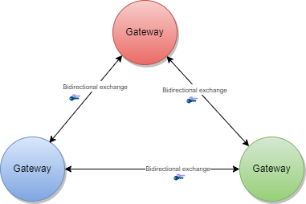
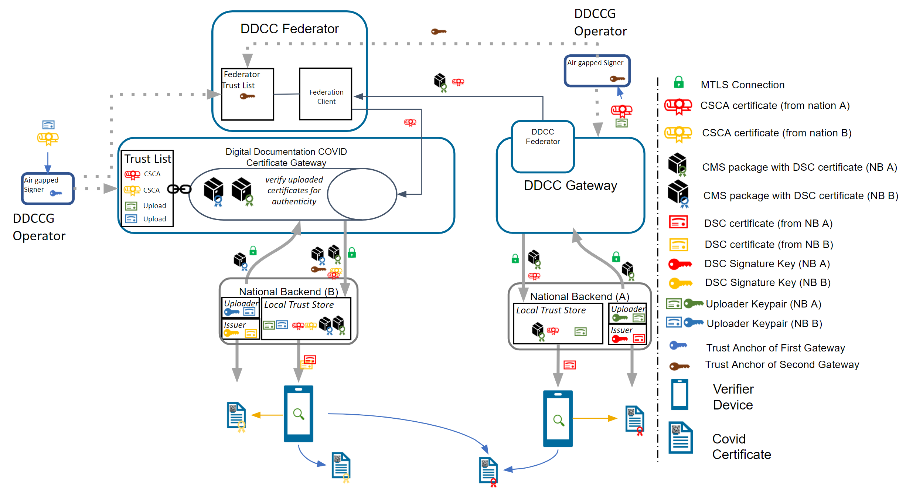

ترجمة آلية — لم يراجعها أي شخص
تُرجمت هذه الصفحة آليًا. لم يراجع أي شخص هذه الترجمة أو يعتمدها، وقد تحتوي على أخطاء. الصفحة بلغة المصدر هي النص المرجعي. اقرأ النص الأصلي (بالإنجليزية)
Machine translation — not reviewed by a person. Read the original (English)
نماذج البيانات والتبادل
الجهات الفاعلة
تُنتج الجهات الفاعلة المعلومات الصحية أو تديرها أو تتصرف بناءً عليها. وفيما يلي الجهات الفاعلة ذات الصلة بشبكة الثقة SMART.
مكتبة قواعد العمل
خدمة موثوقة، تقدّمها عقدة ضمن شبكة الثقة، لمشاركة قواعد العمل باستخدام مواصفة لغة الجودة السريرية (CQL).
كتالوج المنتجات
تُستخدم لإدارة ونشر البيانات الرئيسية للمنتجات الصحية والأجهزة والسلع التي قد يُشار إليها في شهادة صحية رقمية قابلة للتحقق.
خدمة المصطلحات
تُستخدم لإدارة ونشر التقابلات بين مختلف أنظمة الترميز المحلية والمفردات المطلوبة المستخدمة في الشهادات الصحية الرقمية القابلة للتحقق.
نشر المفاتيح
الأحداث المُطلِقة
يُنشئ المشارك في شبكة الثقة، أو إحدى الجهات المُصدِرة المأذون لها من قِبله، زوج مفاتيح عمومي وخاص جديدًا لاستخدامه في توقيع المستندات.
دلالات الرسائل
انظر وثائق EU DCC Open API. واستخدام المفتاح هو DSC لشهادة موقِّع المستندات
الإجراءات المتوقعة
سيتحقق مرسى الثقة من صحة مواد المفاتيح المقدَّمة ويوزعها على المشاركين الآخرين في شبكة الثقة
نسخ دليل PKD المحلي
الأحداث المُطلِقة
دلالات الرسائل
الإجراءات المتوقعة
تشمل الخطوات ما يلي:
- انضمام دليل PKD المحلي (لمرة واحدة). وقد يشمل الانضمام تقييم صيغة دليل PKD المحلي، ومنح دليل PKD الاتحادي صلاحية الوصول، وتوقيع اتفاقات الأعمال.
- تُنسَخ المفاتيح العمومية لدليل PKD المحلي (دوريًا)
- تُدمَج المفاتيح العمومية المنسوخة في قائمة رئيسية (دوريًا)
- تُوقَّع القائمة الرئيسية توقيعًا رقميًا لأغراض التوزيع
يُتوقع من دلائل PKD المحلية المشاركة في دليل PKD الاتحادي ما يلي:
- أن تكون لديها بنية تحتية قائمة للمفاتيح العمومية (PKI) تُستخدم لإصدار وثائق صحية موثوقة (مثل بيانات اعتماد COVID)
- أن تكون لديها أذونات/سياسات قائمة تسمح بمشاركة المفاتيح العمومية
- يمكنه مشاركة المفاتيح العمومية بإحدى الصيغ التالية:
- X.509
- مفاتيح الويب بصيغة JSON (JWK)
- المعرِّفات اللامركزية (DID) وفقًا لمواصفة مواصفة GDHCN.
يُتوقع من دلائل المفاتيح العمومية (PKD) الاتحادية ما يلي:
- أن تكون لديها وسيلة لاسترجاع دلائل المفاتيح العمومية المحلية / العُقد الأعضاء الممثَّلة في خدمات التجميع
- أن تكون لديها أذونات/سياسات قائمة تسمح بمشاركة المفاتيح العمومية الواردة من العُقد الأعضاء في شبكة الثقة
- أن تكون لديها بنية تحتية قائمة للمفاتيح العمومية (PKI) تُستخدم لتوقيع قائمة المفاتيح الخاصة بالعُقد الأعضاء
- يمكنه مشاركة قائمة بالمفاتيح العمومية بالصيغة التالية:
- المعرِّفات اللامركزية (DID) وفقًا لمواصفة مواصفة GDHCN.
توقيع مطالبة الشهادة الصحية (HCERT)
الأحداث المُطلِقة
أُنشئت حمولة المطالبة الخاصة بشهادة HCERT وأصبحت جاهزة لتوقيعها من جهة مُصدِرة تعمل نيابةً عن مشارك في شبكة الثقة.
دلالات الرسائل
ينبغي أن يكون الناتج شهادة HCERT صالحة وموقَّعة
الإجراءات المتوقعة
نشر مفاتيح التحقق - API
الأحداث المُطلِقة
ينشر المشارك في شبكة الثقة المفاتيح إلى بوابة شبكة الثقة لكي تستخدمها تطبيقات التحقق. ويمكن ترميز المفاتيح لأغراض متنوعة، بما في ذلك اتباع حوكمة الشهادات وفقًا لـ $usage و$domain الثقة الخاصين بها
دلالات الرسائل
انظر Swagger API
الإجراءات المتوقعة
استرجاع مفاتيح التحقق - DID
الأحداث المُطلِقة
دلالات الرسائل
ينبغي استرجاع المفاتيح باستخدام مواصفة GDHCN DID.
الإجراءات المتوقعة
بعد انضمام تطبيق التحقق إلى شبكة الثقة، يمكنه استرجاع مفاتيح التحقق. ويمكن استخدام قائمة مفاتيح التحقق المسترجعة لعمليات العمل التالية:
- انضمام دليل PKD اتحادي عن طريق استرجاع مفتاح التوقيع المستخدم لتوقيع القائمة الرئيسية (لمرة واحدة).
- استرجاع القائمة الرئيسية من دليل PKD الاتحادي والتحقق من التوقيع (دوريًا).
- إلغاء تسلسل رمز QR قابل للتحقق (مثل الرمز الشريطي ثنائي الأبعاد 2D لبيانات اعتماد اللقاح) لتحديد معرّف المفتاح.
- استرجاع المفتاح العمومي المرتبط بمعرّف المفتاح من القائمة الرئيسية، أو استخدام مفتاح مخزَّن مؤقتًا.
- التحقق
- التوقيع التشفيري الموجود داخل الرمز الشريطي ثنائي الأبعاد 2D.
- صلاحية الجهة المُصدِرة لإصدار هذا النوع من الشهادات بهذا المفتاح.
- تاريخ انتهاء صلاحية المفاتيح.
- تاريخ انتهاء صلاحية الشهادة.
- عدم إدراج الشهادة في قوائم الإلغاء المتاحة.
- استمرار وجود مفتاح الإصدار في قائمة ثقة لدى السلطة المُصدِرة (غير مُلغى).
- استمرار وجود مفتاح الإصدار في قائمة الثقة لدى سلطة التحقق.
- تطابق الاسم/الهوية على الشهادة مع وثيقة هوية (ID).
- اجتياز الشهادة لقواعد العمل الخاصة بالولاية القضائية التي تُجري التحقق.
استرجاع مفاتيح التحقق - API
الأحداث المُطلِقة
دلالات الرسائل
انظر Swagger API
الإجراءات المتوقعة
بعد انضمام تطبيق التحقق إلى شبكة الثقة، يمكنه استرجاع مفاتيح التحقق. ويمكن استخدام قائمة مفاتيح التحقق المسترجعة لعمليات العمل التالية:
- انضمام دليل PKD اتحادي عن طريق استرجاع مفتاح التوقيع المستخدم لتوقيع القائمة الرئيسية (لمرة واحدة).
- استرجاع القائمة الرئيسية من دليل PKD الاتحادي والتحقق من التوقيع (دوريًا).
- إلغاء تسلسل رمز QR قابل للتحقق (مثل الرمز الشريطي ثنائي الأبعاد 2D لبيانات اعتماد اللقاح) لتحديد معرّف المفتاح.
- استرجاع المفتاح العمومي المرتبط بمعرّف المفتاح من القائمة الرئيسية، أو استخدام مفتاح مخزَّن مؤقتًا.
- التحقق
- التوقيع التشفيري الموجود داخل الرمز الشريطي ثنائي الأبعاد 2D.
- صلاحية الجهة المُصدِرة لإصدار هذا النوع من الشهادات بهذا المفتاح.
- تاريخ انتهاء صلاحية المفاتيح.
- تاريخ انتهاء صلاحية الشهادة.
- عدم إدراج الشهادة في قوائم الإلغاء المتاحة.
- استمرار وجود مفتاح الإصدار في قائمة ثقة لدى السلطة المُصدِرة (غير مُلغى).
- استمرار وجود مفتاح الإصدار في قائمة الثقة لدى سلطة التحقق.
- تطابق الاسم/الهوية على الشهادة مع وثيقة هوية (ID).
- اجتياز الشهادة لقواعد العمل الخاصة بالولاية القضائية التي تُجري التحقق.
ينبغي استرجاع المفاتيح باستخدام مواصفة GDHCN DID.
طلب تحديثات قواعد العمل - API
الأحداث المُطلِقة
دلالات الرسائل
انظر Swagger API
الإجراءات المتوقعة
طلب تحديثات قواعد العمل - API
الأحداث المُطلِقة
دلالات الرسائل
يجب أن يعمل بوصفه مكتبة لقواعد العمل:
- يعبّر عن السياسات الصحية (مثل «يحتاج إلى استكمال سلسلة اللقاح») بوصفها قاعدة عمل قابلة للتنفيذ باستخدام لغة الجودة السريرية (CQL) في صورة مورد FHIR من نوع Library
- ينشر قواعد العمل في صورة موارد FHIR من نوع Library لدى خدمة صحية موثوقة
اختياريًا:
- توفير التوقيع الرقمي لقاعدة العمل في صورة مورد FHIR من نوع Provenance
- يقدّم المفتاح العمومي إلى دليل PKD
الإجراءات المتوقعة
تنفيذ قواعد العمل
الأحداث المُطلِقة
دلالات الرسائل
الإجراءات المتوقعة
تطبيق التحقق:
- الشرط المسبق: تنفيذ سير عمل التحقق الاتحادي على رمز QR واحد أو أكثر
- تحديد قاعدة عمل واحدة (أو أكثر) لتنفيذها وفقًا لحالة الاستخدام
اختياريًا:
- يسترجع المفتاح العمومي لتوقيع قواعد العمل من دليل PKD (إما دليل PKD المحلي أو عبر دليل PKD التجميعي/الاتحادي)
- يتحقق من أصالة قاعدة العمل
- مواءمة محتوى رمز QR مع موارد FHIR المطلوبة باستخدام خرائط البنية (Structure Maps) في FHIR
- تنفيذ قاعدة عمل بلغة CQL على محتوى موارد FHIR
طلب مجموعات القيم - API
الأحداث المُطلِقة
دلالات الرسائل
انظر Swagger API
الإجراءات المتوقعة
طلب مجموعات القيم - FHIR
الأحداث المُطلِقة
دلالات الرسائل
انظر IHE لمشاركة مجموعات القيم وخرائط المفاهيم للاطلاع على المعاملات التي تُجرى على خدمة المصطلحات.
الإجراءات المتوقعة
تنفيذ قواعد العمل
الأحداث المُطلِقة
دلالات الرسائل
الإجراءات المتوقعة
مسارات العمل
المزامنة الروتينية
التحقق من الشهادات الصحية الرقمية
تجميع PKD الاتحادي
التحقق الاتحادي
التحقق الديناميكي من قواعد العمل
نطاقات الثقة
يتألف نطاق الثقة مما يلي:
- حالات الاستخدام وعمليات العمل المحدَّدة المتعلقة باستخدام الشهادات الصحية الرقمية القابلة للتحقق؛ ويجوز إصدار هذه الشهادات الصحية الرقمية القابلة للتحقق أو التحقق منها من خلال خدمات موثوقة يُتيحها المشاركون في شبكة الثقة للصحة الرقمية.
- المواصفات التقنية المفتوحة والقابلة للتشغيل البيني التي تُحدِّد أو تُعرِّف الخدمات الموثوقة والشهادات الصحية الرقمية القابلة للتحقق المعمول بها؛ و
- مجموعة من المعايير السياساتية والتنظيمية التي تصف السلوك المتوقَّع من المشاركين في GDHCN فيما يتعلق بتشغيل الخدمات الموثوقة واستخدام الشهادات الصحية الرقمية القابلة للتحقق (مثل تقليل البيانات إلى الحد الأدنى، والخصوصية، ونطاق الاستخدام).
تَرِد رموز نطاقات الثقة التابعة لـ GDHCN في مجموعة قيم نطاقات الثقة التابعة لـ GDHCN.
نموذج نطاق الثقة
يُعدّ الإطار الإداري والتشغيلي لـ GDHCN المصدرَ القانوني لنطاقات الثقة. ويتبع النموذج المنطقي نطاق الثقة تعريفه الثلاثي الأجزاء: حالات الاستخدام (التي تُنمذِجها مكوِّنات DAK)، والمواصفات التقنية، والمعايير السياساتية والتنظيمية. كما يُسمّي نطاق الثقة شروط استخدامه، وهي مجموعة قيم (ValueSet) من السياسات التي يجوز للمشارك أن يُعلِن أنه يعمل بموجبها.
يُسمّي المشارك تلك السياسات في بيانات اعتماد قابلة للتحقق، بمُدخَل termsOfUse واحد لكل سياسة. فعلى سبيل المثال، تفعل الجهة المُستقبِلة لـ VHL ذلك بموجب خيار بيانات الاعتماد القابلة للتحقق في IHE ITI VHL.
يسمح النموذج بأن يكون كل جزء فارغًا، لكن الجزء الفارغ يُعدّ خطأً في ضمان الجودة (QA). وكذلك الحال بالنسبة إلى مجموعة قيم (ValueSet) لشروط الاستخدام لا تستخدمها أي عملية عمل BPMN.
| نطاق الثقة | مُعرَّف في | شروط الاستخدام |
|---|---|---|
| DDCC | الإطار، الملحق I | شروط استخدام DDCC |
| IPS-PILGRIMAGE | لا يوجد ملحق للإطار بعد؛ صِيغ استنادًا إلى دليل التنفيذ (IG) الخاص بـ IPS للحج | IPS.HAJJ.CONSENT |
التوثيق الرقمي لشهادات COVID-19 (DDCC)
يُشكِّل التوثيق الرقمي لشهادات COVID-19 (DDCC) المنشور في آب/أغسطس 2021، والإرشادات المماثلة لنتائج الاختبارات (https://www.who.int/publications/i/item/WHO-2019-nCoV-Digital_certificates_diagnostic_test_results-2022.1) المنشورة في آذار/مارس 2022، المرجعَ لـ دليل تنفيذ FHIR المرتبط بهما. ويعمل دليل التنفيذ (IG) هذا بوصفه التمثيل القابل للحوسبة لعناصر البيانات الأساسية الواردة في الإرشادات المنشورة، مُعيَّنةً إلى مصطلحات قياسية. وتُشكِّل نماذج البيانات هذه، في صورة نماذج FHIR المنطقية، والمصطلحات، في صورة مجموعات قيم FHIR، أساسَ قابلية التشغيل البيني بين مختلف صيغ بيانات الاعتماد. ويقدِّم دليل التنفيذ خرائط هياكل FHIR وخرائط مفاهيمها لتحديد التحويلات بين صيغ بيانات الاعتماد المدعومة ومجموعة البيانات الأساسية، مما يتيح تنفيذ قواعد العمل على مجموعة مشتركة من عناصر البيانات.
رموز QR الخاصة بـ DDCC والنماذج المنطقية{:width=”850em”}
في الوقت الحالي، يُعترَف بملفات تعريف المحتوى التالية من خلال التوثيق الرقمي لشهادات COVID (DDCC) الصادر عن منظمة الصحة العالمية (WHO):
- الشهادات الرقمية لـ COVID (DCC) الصادرة عن الاتحاد الأوروبي (مطلوب)
- DIVOC (اختياري)
- الأختام الرقمية المرئية - غير المقيَّدة (VDS-NC) الصادرة عن منظمة الطيران المدني الدولي (ICAO) (اختياري)
- بطاقات SMART الصحية (SHC) - التمنيع (اختياري)
المواصفات المصدرية
قد يصعب العثور على المواصفات «المرجعية الأصلية» لصيغ الشهادات المُعيَّنة إلى مجموعات البيانات الأساسية لـ DDCC. وتَرِد أفضل الوثائق المعروفة لكل صيغة من صيغ الشهادات المذكورة أعلاه في قائمة المراجع:
- EU DCC: [ehn-trust-framework-2021], [ehn-dcc-techspec-vol1-2021], [etsi-en-319-102-1-2016], [ec-dcc-techspec-vol1-5], [ec-dcc-vol1-2022], [eu-implementing-decision-2021-1073]
- DIVOC:
- تُعرَّف العناصر بواسطة JSON-LD. واعتبارًا من 2023-02-12، فإن أحدث سياق JSON-LD للقاحات ولنتائج الاختبارات متاح هنا. وتجدر الإشارة إلى أن معرِّفات URI لسياقات JSON-LD الخاصة بـ DIVOC والمُضمَّنة في الشهادات لا تُحَلّ.
- وثائق DIVOC متاحة هنا، لكنها لا تتضمن أوصافًا على مستوى العناصر (مثل روابط المصطلحات على مستوى كل عنصر).
- يجب استنتاج روابط المصطلحات على مستوى العناصر من وثائق عامة أخرى. ويُدخِل سياق JSON-LD
v2العنصرَevidence.icd11Codeللقاحات، لكن لا توجد وثائق تبيِّن الرموز التي يرتبط بها هذا العنصر أو ما إذا كان يُستخدم في بيئة الإنتاج. ولا يوجد أي تمثيل آخر قابل للحوسبة لنوع اللقاح أو منتجه.
- ICAO: [icao-vds-nc]
- بطاقات SMART الصحية: [smart-health-cards-spec], [hl7-shc-vaccination-ig]
PH4H
يصف دليل التنفيذ الطريق السريع للبلدان الأمريكية من أجل الصحة الرقمية (PH4H) استخدامَ GDHCN في إقليم الأمريكتين.
IPS للحج (IPS-Pilgrimage)
يتضمن دليل التنفيذ IPS للحج تمثيلًا قابلًا للقراءة آليًا لإرشادات منظمة الصحة العالمية (WHO) بشأن IPS القابل للتحقق في أثناء الحج. وهو يُرمِّز صراحةً منطقًا قابلًا للتشغيل البيني حاسوبيًا، بما في ذلك نماذج البيانات والمصطلحات وتعبيرات المنطق، بلغة قابلة للحوسبة لدعم تنفيذ سيناريو استخدام IPS في أثناء الحج.
المصطلحات
تتضمن هذه المفاهيم والجدول التالي الاختصارات والمصطلحات المستخدمة في هذا المستند.
| المصطلح | الوصف |
|---|---|
| DCC | الشهادة الرقمية لCOVID-19. |
| DDCC | التوثيق الرقمي لشهادة COVID-19. |
| بوابة DCC | تطبيق ويب من نوع REST لتبادل شهادات موقِّع المستندات ومجموعات قيم DCC وقواعد عمل DCC وقوائم الإلغاء لأغراض التحقق من DCC بين الأنظمة الخلفية الوطنية للدول المتصلة. |
| CMS | صيغة الرسائل التشفيرية، وفقًا لـ RFC5652. وتُستخدم هذه الصيغة للتوقيع الرقمي على محتوى الرسائل أيًّا كان أو حساب ملخّصه أو مصادقته أو تشفيره. |
| JRC | مركز البحوث المشترك الأوروبي. |
| OG | بوابة المنشأ. |
| CQL | لغة الجودة السريرية. |
مقدمة
توفّر هذه المواصفة المعمارية الوسائل اللازمة لإنشاء شبكة ثقة اتحادية لاستخدامها مع السجلات الصحية، مثل المواصفات التقنية ووثائق إرشادات التنفيذ الخاصة بالتوثيق الرقمي لشهادات COVID-19 (DDCC) الصادرة عن منظمة الصحة العالمية (WHO). ويستند ذلك إلى افتراض أن المشاركين في شبكة الثقة قد يُنشئون شبكات ثقة وطنية مستقلة خاصة بهم، أو يشاركون في شبكة ثقة إقليمية، أو يرغبون في المشاركة في شبكة ثقة اتحادية عالمية. وفضلًا عن ذلك، قد يرغب المشاركون في شبكة الثقة في أن تكون شبكات الثقة هذه قابلة للتشغيل البيني لحالات الاستخدام المحلية والعابرة للولايات القضائية. وفي حين تقع اعتبارات الحوكمة والسياسات المحددة اللازمة لإنشاء شبكات الثقة القابلة للتشغيل البيني هذه خارج نطاق هذا المستند، فإن المقصود هو أن يدعم التصميم التقني الوارد في هذا المستند سياسات المشاركين في شبكة الثقة داخل الولاية القضائية الواحدة وعبر الولايات القضائية.
صُمِّمت مواصفات بوابة شبكة الثقة (TNG) الواردة في هذا المستند لدعم مواصفة DDCC، التي تعمل بوصفها مواصفة جسرية/جامعة لمختلف السجلات الصحية مثل شهادات COVID الرقمية (مثل DCC الخاصة بالاتحاد الأوروبي EU، وSMART Health Cards، وDIVOC، وICAO). وتبني هذه المواصفة على بوابة الشهادة الرقمية لCOVID التابعة للاتحاد الأوروبي من خلال توسيعها بعدة طرق مهمة:
- مما يتيح الاتحاد وتبادل المعلومات بين بوابات الربط على أساس الند للند؛
- دعم الوصول إلى محتوى البيانات الوصفية (مثل مجموعات القيم/الترميزات وقواعد العمل) مع الالتزام الصريح بمواصفة HL7 FHIR؛
- توفير وسيلة صريحة لإلغاء شهادات COVID الرقمية؛
- مما يتيح الدعم (الاختياري) لسير عمل التحقق والتحقق من الصحة عبر الإنترنت.
ضمن نظام DCC الحالي، تؤدي بوابة الربط المركزية الدور الرئيسي في إرساء الثقة بين جميع المشاركين المتصلين في شبكة الثقة. ويتبع مشغِّلو بوابة الربط عملية موثَّقة توثيقًا جيدًا للتثبت من الهوية وإلحاق مرسى الثقة لكل مشارك في شبكة الثقة. وتبني TNG على هذا النظام لتمكين منظمات أخرى من إنشاء بوابات ثقة، مما يتيح تشكيل شبكة اتحادية من بوابات الثقة تدعم جميع الشهادات الرئيسية لاعتمادات COVID-19.
الطرف الموثوق مقابل النظام الخلفي الوطني
يركّز التصميم الحالي لبوابة الربط على إرساء الثقة بين «الأنظمة الخلفية الوطنية» بمعنى نظام تشغّله/تملكه سلطة صحية وطنية. وقد يكون ذلك نصًا برمجيًا أو حلًا مؤتمتًا بالكامل أو عملية يدوية، قادرة على الاتصال ببوابة الربط على نحو موثوق وعلى تحميل المحتوى وتنزيله. أما الحلول المحددة الأخرى التي تقف خلف ذلك فهي خارج نطاق بوابة الربط نفسها. وفي نطاق DDCC، تُعد صياغة مصطلح «النظام الخلفي الوطني» ضيقة أكثر من اللازم، لأنه قد توجد أطراف أخرى يمكن ربطها بأنظمة النشر الخاصة بها ببوابة ربط في شبكة الثقة. ولذلك ينبغي فهم مصطلح «النظام الخلفي الوطني» في هذا النطاق على أنه «طرف موثوق» بمعنى مشارك حصل على حق الوصول إلى بوابة ربط موثوقة. وتعمل بوابة الربط الموثوقة أو مُنسِّق الاتحاد عندئذٍ أيضًا بوصفه «طرفًا موثوقًا» إزاء بوابات الربط الأخرى.
رؤية تصميم بوابة الربط
تُعد بوابة EU DCC حاليًا نظامًا مركزيًا واحدًا يُرسي الثقة بين المشاركين في DCC ويتيح تبادل قواعد العمل ومجموعات القيم وقوائم الإلغاء. وإذا أنشأت منطقة أخرى من العالم بوابة مماثلة، فلا توجد حاليًا في البنية وسيلة لتبادل هذه البيانات الموثوقة بين البوابتين. وفي هذه البنية الجديدة ضمن سياق DDCC، يمكن ربط بوابات متعددة بعضها ببعض وتبادل البيانات الموثوقة. وعلى المدى الطويل، ستتيح هذه البنية إنشاء مجموعات، وصولًا في نهاية المطاف إلى إقامة اتحاد. وقد تكون هذه البنية قابلة للتطبيق ومحل اهتمام لدى الأطراف غير الرسمية، مثل شركات الطيران، التي ترغب في الحصول على نسخة للقراءة فقط من محتوى بوابة الربط. ويمكن تحقيق ذلك بإلحاق شركة الطيران ببوابة معدَّة خصيصًا لهذا الغرض ومتصلة بالبوابة الرسمية. ولتحقيق هذا الهدف، يجب أن تدعم البنية أوضاع تشغيل متعددة، مثل وضع الأساسي-الثانوي. والتنفيذ الحالي لبوابة EU DCCG هو، كما ذُكر سابقًا، نظام مركزي واحد يعمل بوصفه محورًا لتخزين المعلومات اللازمة المجمَّعة من الأطراف الموثوقة وإدارتها.

ينبغي أن تحقّق TNG هذا التحسين للتنفيذ الحالي لـ DCCG بغرض إنشاء شبكة بين بوابات ربط متعددة لتبادل مواد المفاتيح العمومية المرتبطة بالسجلات الصحية ومجموعات القيم وقواعد العمل بين أطراف مختلفة (رسمية وغير رسمية وتجارية). وفي هذه البنية، يمكن لبوابة الربط الاتصال بأي بوابة ربط أخرى عن طريق التهيئة اليدوية لقائمة الاتصالات وعلاقات الثقة. ولإدارة الاتصالات وسلوك التنزيل الخاص بها، يُستحدث مكوّن جديد هو مُنسِّق الاتحاد. ومُنسِّق الاتحاد خدمة مصغَّرة تعمل بوصفها عميل تنزيل آليًا بين بوابتين وتضطلع بجميع مسؤوليات التبادل الموثوق للبيانات.

يتمثل العمود الفقري لتبادل البيانات هذا في وظائف مكتبة الموصِّل الحالية التي تتصل ببوابة الربط وتوفّر للمستهلك أهم الوظائف اللازمة. وتُعزَّز هذه المكتبة بوظيفة الاتصال ببوابات ربط متعددة بدلًا من بوابة واحدة.
حالات الاستخدام
الانضمام الثنائي
في حالة استخدام الانضمام الثنائي، تتصل مكتبة الموصِّل بوصفها طرفًا موثوقًا ببوابات ربط متعددة لتنزيل المحتوى وتحميله. ويتطلب ذلك الانضمام إلى كلتا البوابتين.

التبادل من نظير إلى نظير
في حالة استخدام التبادل من نظير إلى نظير، تستطيع بوابتان أو أكثر تبادل بياناتها في الاتجاهين. وتُمكِّن البوابة المصدر والبوابة الهدف كلٌّ منهما الأخرى من تنزيل البيانات. وتُلحق جميع البيانات المتبادَلة بالبيانات القائمة داخل بوابة الربط. وقد يشمل ذلك بيانات بوابات أطراف ثالثة، إذا سمح بذلك اتفاق تبادل البيانات بين البوابتين.

التبادل الأساسي-الثانوي
في حالة استخدام التبادل الأساسي-الثانوي، تعمل بوابة أو عدة بوابات بوصفها مصدرًا أساسيًا، وتعمل مجموعة أخرى من البوابات بوصفها مصدرًا ثانويًا. وفي هذا الوضع، تُنزِّل البوابات الثانوية بيانات البوابة الأساسية وتُلحقها بمجموعة بياناتها الخاصة أو تستبدل مجموعة بياناتها بالبيانات المُنزَّلة. وتتجاهل البوابة الأساسية بيانات البوابات الثانوية، التي تعمل مجرد نسخ للقراءة من البوابة الأساسية. ويمكن للأنظمة الخلفية الوطنية الرئيسية الاتصال بالبوابة الأساسية وتحميل البيانات إلى تلك البوابة الأساسية الوحيدة.

تبادل المصادر المدمجة
في حالة استخدام تبادل المصادر المدمجة، تُنزِّل بوابة الربط البيانات من بوابات متعددة وتُلحقها بمجموعة بياناتها الخاصة. وينتج عن ذلك مجموعة مدمجة.

وسيط الثقة
يمكن استخدام محتوى بوابة الربط لإرساء الثقة بين مشاركين لا يربطهم سوى ارتباط فضفاض، مثل أجهزة الجهات المُتحقِّقة المعروفة لدى الطرف الموثوق A، ولكنها غير معروفة مباشرةً لدى الطرف الموثوق B.

لإرساء الثقة بين المشاركين، يمكن إنشاء وسيط ثقة يعتمد على قائمة الثقة الخاصة ببوابة الربط. ويمكن للوسيط بعد ذلك استخدام هذه المعلومات لتقرير ما إذا كان ينبغي إرساء علاقة الثقة أم لا. فعلى سبيل المثال، يمكن للمعترِض التحقق مما إذا كان توقيع رمز JWT قد أُنشئ بالمفتاح العمومي لشهادة وقّعتها سلطة SCA مُلحَقة. وعندما تكون سلطة SCA مُلحَقة وموثوقة، فإن ذلك يُثبت أن التوقيع أجراه طرف يحظى بثقة هذه السلطة SCA. وعندئذٍ تُمنح الثقة لهذا المشارك أيضًا.

لمحة عامة عن البنية
يتمثل الغرض من بوابة شبكة الثقة في تمكين التبادل المؤمَّن والموثوق للبيانات داخل شبكة الثقة.
البيانات المتبادَلة عبر TNG
تبادل البيانات الوصفية
توفّر TNG وسيلة قابلة للتشغيل البيني لتبادل البيانات الوصفية الأساسية دعمًا لشهادات COVID-19 الرقمية باستخدام معايير HL7 FHIR. ويشمل ذلك على وجه الخصوص:
- مجموعات القيم التي ينبغي تبادلها باستخدام المعاملات المحددة في ملف IHE التعريفي لتبادل مجموعات القيم وخرائط المفاهيم (SVCM)، والتي تتضمن الموارد الآتية:
- موارد ValueSet في HL7 FHIR لتبادل الترميزات والمصطلحات المشار إليها في مختلف مواصفات شهادات COVID الرقمية (مثل اللقاحات أو الاختبارات المسموح بها). - يجوز استخدام موارد ConceptMap في HL7 FHIR لتوفير تقابلات بين الترميز المحدَّد على مستوى الولاية القضائية وترميز مواصفة DDCC.
- قواعد العمل التي ينبغي أن تتبع الأداة المعرفية والبنية التحتية لدعم القرار السريري، بما في ذلك الموارد الآتية:
- موارد Library في HL7 FHIR لتبادل مكتبات قواعد العمل المعبَّر عنها بلغة الجودة السريرية (CQL)
- موارد PlanDefinition في HL7 FHIR للإشارة إلى قاعدة العمل التي ينبغي تنفيذها بناءً على حالات الاستخدام ذات الصلة بالتحقق من الصحة أو باستمرارية الرعاية.
لتجريد هذه المتطلبات، ستستحدث بوابة شبكة الثقة وظيفة جديدة تُسمى «المراجع الموثوقة»، تتيح لبوابة الربط تبادل أي نوع من نقاط نهاية الخدمات دون تبادل المحتوى نفسه. ولأغراض التوافق مع الإصدارات السابقة، تبقى وظائف قواعد العمل ومجموعات القيم الخاصة بـ DCC في البنية، ولكن يمكن تهيئتها لتعطيلها باستخدام الملفات التعريفية. وستحل المراجع الموثوقة محل نقاط النهاية الصريحة لقواعد العمل ومجموعات القيم، لأن التباين الواسع في المحتوى الطبي ينبغي أن يُترك لتطبيقات خوادم FHIR بدلًا من تنفيذ كل خدمة في بوابة الربط نفسها.
تبادل المفاتيح العمومية
توفّر TNG وسيلة لتبادل المفاتيح العمومية المستخدمة في التوقيع على شهادات COVID الرقمية، فضلًا عن توفير قوائم بشهادات المفاتيح العمومية الملغاة.
تبادل المراجع
توفّر TNG وظيفة تخزين موارد آمنة وموثوقة (أي مجموعات قيم FHIR أو قواعد العمل) تضمن أن تكون لدى جميع المشاركين في النظام معرفة دقيقة بالمصادر المهمة. ويمكن تخزين هذه المراجع في شكل عناوين URL.
تبادل الجهات المُصدِرة
بالنسبة لبعض أنواع الاعتمادات، مثل الاعتمادات القابلة للتحقق، يلزم TNG لضمان الثقة في الجهات المُصدِرة لتلك الاعتمادات. وتحمل معظم الاعتمادات معرِّفًا للجهة المُصدِرة، مثل عنوان HTTP URL أو معرِّف DID يتضمن مواد المفتاح العمومي اللازمة للتحقق من هذه الاعتمادات. ولتوفير قائمة موثوقة بهذه الجهات المُصدِرة، توفّر بوابة الربط وظيفة لتحميل معرِّفات الجهات المُصدِرة.
مفهوم الحل
لتحقيق الرؤية المعمارية، ستُعزَّز بوابة DCC القائمة بخدمة مصغَّرة تُنفِّذ مكوّن مُنسِّق اتحاد TNG. ويُنشر مكوّن مُنسِّق الاتحاد هذا بجوار بوابة الربط ويتولى الاتصال بمُنسِّقي الاتحاد الآخرين. ويستطيع كل مُنسِّق اتحاد تنزيل بيانات المكوّنات الأخرى. ولا يُتوقَّع تحميل البيانات إلى مُنسِّقي الاتحاد الآخرين (إذ تُنزِّل كل بوابة ربط عبر مُنسِّق اتحاد). ويمكن للمستهلكين الموثوقين أن يقرروا استخدام معلومات الاتحاد، ويجب عليهم تفعيل هذه الميزة صراحةً. وخلاصة القول، يعمل مُنسِّق الاتحاد بوصفه موصِّلًا/أداة مزامنة لبوابة الربط وبوصفه مزوِّد واجهة للوصول إلى البيانات الاتحادية.

ملاحظة: تظل البنية الأساسية لبوابة DCC دون تغيير. ولن تُستحدث إلا تحسينات متوافقة مع الإصدارات السابقة لدعم الاتحاد.
إنشاء الاتصال ببوابة الربط
توفّر مواصفة DDCC معايير قابلة للتشغيل البيني لتبادل محتوى البيانات الوصفية، مثل المراجع الموثوقة والشهادات الموثوقة وشهادات الموقِّعين، مع الأنظمة عبر بوابة شبكة الثقة. وتُدار هذه البيانات الوصفية من خلال أنظمة موثوقة ستحتاج إلى خدمة اتصال/وكالة أو خدمة واجهة مع بوابة شبكة الثقة («وسيط TNG»). ويجب إلحاق هذا الوسيط وأن يحظى بثقة مشغِّل TNG قبل أن يصبح تحميل المحتوى أو تنزيله ممكنًا. ومن الناحية التقنية، قد يكون ذلك نصًا برمجيًا أو نظامًا خلفيًا أو وسيط OpenHIM. وتتمثل المهام الرئيسية لهذا النوع من البرمجيات في إنشاء اتصال mTLS مع بوابة الربط، والتوقيع على المحتوى المُحمَّل (مثل CMS، صيغة الرسائل التشفيرية)، وتحميل شهادات DSC الموقَّعة أو مُدخلات الإلغاء أو إصدار قواعد العمل. أما الإجراءات المستخدمة في الخلفية فهي خارج النطاق. وقد توجد عمليات إصدار يدوية أو قرارات آلية أو عمليات أخرى، غير أنه من الأهمية بمكان ضمان عدم المساس بالقناة الموثوقة وبأمن الشهادات المستخدمة للتحميل/لاتصال TLS.
خيارات الربط بالأنظمة الأخرى
يلزم وجود أداة ربط لترجمة المُدخلات الواردة من النظام المصدر إلى HL7 FHIR / واجهة Rest API الخاصة ببوابة الربط من أجل ربط الأنظمة القائمة (أي أدلة المفاتيح العمومية PKD أو أي أنظمة أخرى تحتوي على شهادات PKI (مثل ICAO)، أو قواعد العمل أو مجموعات القيم (مثل خوادم FHIR)) بـ TNG. فعلى سبيل المثال، لترجمة دليل مفاتيح عمومية قائم على LDAP إلى بوابة الربط، يمكن إعداد نص برمجي/وسيط لاستخراج شهادات DSC وتحميلها تلقائيًا إلى بوابة الربط. ويُرجى ملاحظة أنه في هذا السيناريو يجب إلحاق جميع سلطات SCA قبل التحميل لكي تعمل هذه العملية.
في ظروف خاصة، عندما تلزم بعض «معاملات البيانات الجماعية» أو عمليات المزامنة الكثيفة، قد يتوفر خيار إعداد مُهايئ مباشرةً فوق قاعدة بيانات بوابة الربط. وتدعم TNG نفسها JDBC، القادرة على قبول قواعد بيانات أخرى غير mysql. فعلى سبيل المثال، إذا استُخدمت Cassandra أو MongoDb أو CouchDB وتوفر برنامج تشغيل JDBC، يمكن نسخ البيانات نسخًا متماثلًا عبر عُقد متعددة.
ملاحظة: لعمليات النسخ المتماثل لقواعد البيانات سلوكها الخاص، ولا يمكن لوظائف بوابة الربط أن تغطي كل قاعدة بيانات متاحة. ولذلك ينبغي عدم استخدام ميزة JDBC إلا عند الضرورة وعلى مسؤولية المستخدم.
الوحدات البنائية
تتألف بوابة شبكة الثقة من بوابة DCC المعزَّزة بآليات الاستدعاء الراجع ومصادر إضافية لقوائم الثقة، ومكوّن جديد لمُنسِّق الاتحاد مع عميل التنزيل، وواجهة API للاتحاد، ووكيل للاستدعاءات الصادرة، وواجهة لمسارات الخدمات المختلفة.

نموذج الثقة
لمحة عامة
يستند نموذج الثقة لبوابة الربط إلى حوكمة شهادات PKI الخاصة ببوابة DCC. وتُحمَّل جميع العناصر ذات الصلة بالأمن بصيغة CMS موقَّعة وتُؤمَّن بأنواع مختلفة من شهادات PKI على النحو المحدد في حوكمة شهادات PKI. والعناصر المحورية في نموذج الثقة هي سلطة SCA لحماية شهادات موقِّع المستندات، ورسائل CMS لحماية المحتوى المُحمَّل.
SCA وDSC
للتوقيع على شهادات COVID-19 الرقمية، تُنشئ سلطة مُصدِرة شهادة موقِّع المستندات («DSC»). وتوزّع كل سلطة شهادات DSC الخاصة بها على الجهات المُتحقِّقة، بحيث يمكن استخدام DSC لإثبات صلاحية الشهادة الصادرة. ولإرساء سلسلة ثقة بين شهادات DSC المستخدمة وموزِّعي قوائم الثقة الوطنية، توقّع سلطة جذر («SCA») كل شهادة DSC للتحقق من أصالة DSC نفسها. ولأسباب أمنية، تُعلَن سلطة SCA معزولة عن الشبكة، ويُلحَق الجزء العمومي منها لاحقًا ببوابة الربط. وأثناء الانضمام، يوقّع مشغِّل بوابة الربط على SCA لمنح الثقة في الفحص الأولي. وبعد الانضمام، يمكن فحص كل شهادة DSC واردة مقابل SCA الموثوقة. ويُرسي توقيع المشغِّل (الموقَّع بواسطة DCCGTA) الثقة مع شهادات مختلفة، مثل شهادة المُحمِّل وشهادة مصادقة TLS، على النحو المحدد في حوكمة الشهادات.

استخدام CMS
لدعم محتوى متعدد في بوابة الربط بمستوى الأمان نفسه، يستحدث نموذج الثقة CMS بوصفها حاوية عامة للعناصر ذات الصلة بالأمن. وتتيح صيغة CMS توحيد التوقيع والتشفير بصرف النظر عن المحتوى، لمستلم واحد أو مستلمين متعددين.

التحسين
لا يدعم نموذج الثقة الحالي لبوابة DCC إلا ربط أنظمة خلفية متعددة وتبادل المحتوى بينها (انظر أدناه).

لتحقيق الرؤية المعمارية، سيُعزَّز نموذج الثقة لبوابة الربط بحيث يتمكن مُنسِّق الاتحاد من دعم مراسي ثقة متعددة. ولهذا الغرض، سيُلحَق مُنسِّق اتحاد TNG ببوابة المصدر بشهادتَي TNPTLS وTNPUP للوصول إلى محتوى بوابة الربط. وفي بوابة الوجهة، يُهيَّأ مرسى الثقة لبوابة المصدر (ويوقّعه المشغِّل) لقبول محتوى المصدر بوصفه صالحًا. وإذا نجح التحقق، يُضاف المحتوى بوصفه مجموعة فرعية إلى محتوى بوابة الربط القائم. ويمكن للأنظمة الخلفية الوطنية المتصلة بعد ذلك تنزيل جميع المعلومات بتفعيل خيار الاتحاد، للحصول على المحتوى من كلتا البوابتين. ويمكن التحقق من سلسلة الثقة عبر مرسى الثقة لبوابة الربط المتصلة وقائمة الثقة لمراسي الثقة المُلحَقة.

ملاحظة: يعمل مُنسِّق الاتحاد بوصفه نوعًا خاصًا من «النظام الخلفي الوطني»، ولذلك تُلحَق جميع الشهادات المرتبطة بـ TNP على النحو المعتاد باستثناء شهادة TNPUP.
المفاتيح العمومية الخام
لا يدعم نموذج الثقة المفاتيح العمومية الخام لأسباب أمنية، ولا سيما في الحالات التي:
لا يمكن التحقق من صلاحية المفاتيح الخام، ولا يمكن للمصدر (مثل سلطة الجذر) التحقق من المفتاح الخام، ويمكن إنشاء المفاتيح الخام وتبادلها بسهولة، كما أن ضعف الحوكمة «يفتح الباب» أمام جميع المشاركين في شبكة الثقة
ولذلك يجب تحويل جميع المفاتيح الخام إلى غلاف شهادة x509 لتصبح شهادة DSC على بوابة الربط، ويجب أن توقّعها سلطة SCA مُلحَقة على النحو الصحيح. ولا يتأثر التحقق من شهادة COVID-19 بهذه العملية، ما دام KID الصحيح مُطبَّقًا أثناء التحميل (وفي الشهادة).
تقييد DSC
لأغراض دعم الأنظمة القديمة، أو لأي حاجة إلى التمييز في عملية التحقق، كالتمييز بين الجهات المُصدِرة الصحيحة أو التمييز في حساب KID. ويوصى بأن تحتوي شهادات DSC على معرِّفات OID الآتية في حقل الاستخدام المُوسَّع للمفتاح:
| الحقل | القيمة | الوصف |
|---|---|---|
| extendedKeyUsage | 1.3.6.1.4.1.1847.2021.1.1 | للجهات المُصدِرة لشهادات الاختبار |
| extendedKeyUsage | 1.3.6.1.4.1.1847.2021.1.2 | للجهات المُصدِرة لشهادات التطعيم |
| extendedKeyUsage | 1.3.6.1.4.1.1847.2021.1.3 | للجهات المُصدِرة لشهادات التعافي |
| extendedKeyUsage | 1.3.6.1.4.1.1847.2022.1.20 | للمفاتيح الخام لـ DIVOC |
| extendedKeyUsage | 1.3.6.1.4.1.1847.2022.1.21 | للمفتاح الخام لـ SHC |
| extendedKeyUsage | 1.3.6.1.4.1.1847.2022.1.22 | للمفاتيح الخام في شهادات DCC (يُحسب kid على المفتاح العمومي فقط) |
يمكن أن يُقيِّد استخدام OID نطاق شهادة موقِّع المستندات أثناء عملية التحقق (إذا كان تطبيق الجهة المُتحقِّقة يدعم ذلك). فعلى سبيل المثال، لن تكون شهادات التطعيم المزوَّرة الصادرة عن مراكز الاختبار صالحة، لأنها موقَّعة بشهادة DSC مقيَّدة بالجهات المُصدِرة لشهادات نتائج الاختبارات.
يمكن أيضًا استخدام OID مؤشرًا للتحقق، إذ يمكن أن يدل على أن هذه الشهادة غلاف لمفاتيح خام.
قد توجد قيود أخرى على DSC ويمكن تحديدها كلما نشأت حالات استخدام جديدة.
ملاحظة: ينبغي توثيق جميع استخدامات extendedKey توثيقًا جيدًا على github لتجنّب أي التباس بشأن الاستخدام. وينبغي إعداد كل سمة لازمة لدعم عملية التحقق على أفضل وجه.
بنية مُنسِّق الاتحاد
لمحة عامة
صُمِّم مُنسِّق الاتحاد بوصفه مكوّنًا فرعيًا جديدًا يمكن استضافته خدمةً مصغَّرة أو ضمن بوابة الربط في عملية نشر واحدة. ويمكن تهيئة هذا السلوك أثناء التثبيت. وبوجه عام، يوفّر مُنسِّق الاتحاد وظيفة التنزيل الآلي لمحتوى بوابة الربط أو الاتحاد. ويُخزَّن المحتوى المُنزَّل في قاعدة بيانات بوابة الربط لإتاحته لنقاط نهاية الاتحاد الخاصة ببوابات الربط. ويمكن للأطراف الموثوقة بعد ذلك تنزيل البيانات الاتحادية من نقاط النهاية هذه.
منظور الصندوق الأسود

منظور الصندوق الأبيض

نموذج البيانات
####### تهيئة مُنسِّق الاتحاد
ملاحظة: يجب تهيئة كل مسار اتحاد في بوابة الربط يدويًا للتنزيل الصريح، لتجنّب سوء الفهم في التهيئة. وهذا أمر مهم لأسباب أمنية. ويجب إلحاق جميع مراسي الثقة، وإلا يُستبعَد المحتوى بالتصفية.
| الحقل | النوع | الوصف |
|---|---|---|
| ID | int | المعرِّف الفريد (ID) لصف الجدول |
| GatewayId | GUID | المعرِّف الفريد (ID) لبوابة المنشأ الأخرى. |
| GatewayEndpoint | Varchar | عنوان URL لبوابة الربط الأخرى. |
| GatewayKid | Varchar | KID لشهادة العميل الخاصة ببوابة المنشأ المستخدمة للاتصال بالبوابة الأخرى. (TNG TLS FED |
| GatewayPublicKey | Varchar | المفتاح العمومي ECDSA لتوقيع بوابة الربط |
| AuthenticationKID | مصفوفة Varchar | معرِّفات KID لشهادات TNGTLS GW المُلحَقة للبوابة الأخرى. |
| TrustAnchorKIDs | مصفوفة Varchar | معرِّفات KID لمرسى الثقة المُلحَق (TNG TA) |
| DownloadTarget | String | FEDERATION أو GATEWAYONLY |
| الوضع | int | تعداد لوضع التنزيل: APPEND أو OVERRIDE. يُضيف وضع الإلحاق البيانات المُنزَّلة إلى مجموعة البيانات القائمة (وتُستبدل بيانات الاتحاد القائمة). ويحذف وضع التجاوز مجموعات البيانات القائمة (باستثناء شهادات TNPTLS الخاصة بها ومراسي الثقة وتهيئات الاتحاد) |
| التوقيع | Varchar | توقيع مرسى الثقة |
####### مُجدوِل التنزيل
| الحقل | النوع | الوصف |
|---|---|---|
| GatewayID | GUID | المعرِّف الفريد (ID) لبوابة الربط |
| DownloadInterval | int | فاصل التنزيل |
| LastDownload | TimeStamp | آخر وقت للتنزيل |
| إعادة المحاولة | boolean | علامة إعادة المحاولة |
| الرسالة | String | رسالة مُنسِّق الاتحاد |
| المحاولات الفاشلة | int | عدد المحاولات الفاشلة |
نقاط النهاية
لاستخدام البيانات الاتحادية، ستُعزَّز بوابة الربط بنقاط نهاية للاتحاد هي صيغ معدَّلة من مسارات GET المشتركة. وباستخدام نقاط النهاية الجديدة هذه، يُرجَع المحتوى المشترك معدَّلًا:
| الفعل | مُستخدَم في مُنسِّق الاتحاد | مُستخدَم في الوسيط | المسار | التعديل/السلوك |
|---|---|---|---|---|
| GET | X | X | /trustlist/certificates | يُرجِع قائمة الشهادات الموثوقة. ويمكن تصفية القائمة باستخدام مُعامِلات استعلام اختيارية. ولأسباب تتعلق بالتوافق مع الأنظمة القديمة، تُدرَج جميع شهادات الموقِّعين في مجموعة الشهادات «DSC» (إذا كان الملف التعريفي مفعَّلًا)، وينبغي تسليم جميع الشهادات الأخرى عبر مُعامِل استعلام. |
| GET | X | X | /trustlist/issuers | يُرجِع قائمة الجهات المُصدِرة الموثوقة. ويمكن تصفية القائمة باستخدام مُعامِلات استعلام اختيارية. |
| GET | X | X | /trustlist/signatures | يُرجِع قائمة التوقيعات لقوائم الثقة القائمة. |
| GET | X | X | /trustlist/references | يُرجِع قائمة المراجع الموثوقة. ويمكن تصفية القائمة باستخدام مُعامِلات استعلام اختيارية. |
ملاحظة: ينبغي لجميع المسارات تصفية المحتوى المُسلَّم بحسب قيمة التجزئة لتجنّب تسليم محتوى مكرَّر. ففي بعض الظروف، يمكن لاتحادين مختلفين أن يستقبلا المحتوى نفسه من طرف موثوق TP واحد.
مُعامِلات الاستعلام المشتركة
يجب أن يوفّر كل مسار يُسلِّم بيانات اتحادية مُعامِل استعلام لتصفية الاتحادات باستخدام مصفوفة:
/URL?federationId=id1,id2,id3&Domain=DCC&ResourceType=...
إذا ضُبط الوضع على «GATEWAYONLY»، فيجب استخدامه للاستعلام عن معرِّف بوابة الربط المهيَّأ فقط.
صيغة الاتحاد
ينبغي أن تتضمن صيغة البيانات الاتحادية دائمًا غلافًا اتحاديًا يحتوي على معلومات federationID وDomain ونوع المورد.
عملية التنزيل
لتوحيد بيانات بوابات ربط متعددة في اتحاد، تُستحدث عملية تنزيل ينبغي أن تضمن عدم تنزيل سوى البيانات الموثوقة إلى بوابة الربط المحلية. والبيانات الموثوقة تعني في هذا السياق أن لمشغِّل بوابة الربط المحلية السيطرة الكاملة على البيانات الاتحادية المقبولة وغير المقبولة. ولتحقيق هذا الهدف، يجب على مشغِّل بوابة الربط المحلية أن يُلحق صراحةً أي مُنسِّقي اتحاد بعيدين، إضافة إلى مراسي الثقة للبيانات التي يمكن قبولها. وهذا ضروري لأن كل مُنسِّق اتحاد بعيد قد يُسلِّم بيانات بوابات ربط أخرى متعددة (يثق بها مشغِّل بوابة المنشأ)، لكن هذا لا يعني بالضرورة أن هذه البيانات موثوقة تلقائيًا لدى مشغِّل بوابة الربط المحلية أيضًا (ويجب تجنّب علاقات الثقة الضمنية). ولذلك ينبغي، أثناء عملية التنزيل، إجراء فحص يتخطى جميع البيانات التي لا يثق بها المشغِّل المحلي صراحةً. ويمكن تحقيق ذلك عبر إدراج مراسي ثقة متعددة في القائمة البيضاء والتحقق المتقاطع عبر شهادات TNPUP. وإذا أُرسيت سلسلة الثقة على هذا النحو، يمكن تنزيل كل محتوى والتحقق منه ودفعه إلى المخزن. وتتبع عملية التنزيل بأكملها آلية تنزيل تفاضلي، تُنزِّل المحتوى كاملًا يوميًا، وخلال اليوم الفروقات فقط. ويعني ذلك بالنسبة لشبكة الثقة أن الشهادة «تنتقل تدريجيًا» من بوابة المنشأ خطوة بخطوة إلى جميع بوابات الربط الأخرى. ونظرًا لهذا السلوك، يجب مراعاة فاصل زمني يقارب يومًا واحدًا بين إنشاء زوج المفاتيح وإصدار الشهادات الأولى به.

تعديلات البنية وتغييراتها
تعديلات بوابة EU DCC (المواصفة)
جداول البيانات
يُعزَّز جدول الأطراف الموثوقة (انظر الفصل 4.2.3.1، بوابة EU DCC) بنوع شهادة جديد «TRUSTANCHOR»، وتظهر هذه الأنواع الجديدة في استدعاء API الخاص بقوائم الثقة. وللتمييز بين مُنسِّق الاتحاد والطرف الموثوق العادي، يُستحدث نوع («TP» و«FEDERATOR» و«GATEWAY») للعنصر الموثوق. وللتمييز بين النطاقات المختلفة للشهادات، يحصل الجدول أيضًا على عمود جديد «DOMAIN» قيمته الافتراضية «DCC». ويمكن أن تكون القيم الأخرى في الوقت الحالي «ICAO» و«DIVOC» و«SHC». ويظهر النطاق في مسارات قوائم الثقة.
يحصل كل جدول بيانات (SignerInformation وTrusted Issuer وTrusted Reference وغيرها) على عمود جديد لكل من UUID ومعرِّف الاتحاد وobjectVersion. وتُغيَّر المفاتيح الأساسية إلى ID + معرِّف الاتحاد لضمان التفرّد.
تحميل SignerInformation
يجب أن تكون نقاط نهاية معلومات الموقِّعين قابلة للتهيئة بواسطة ملف تعريفي لتفعيل المسارات وإيقافها. وهذا ضروري للحفاظ على التوافق مع الإصدارات السابقة لبوابة EU DCC. وفي سياق DDCC، تكون هذه المسارات معطَّلة.
تحميل الشهادات الموثوقة
لدعم حالات استخدام إضافية، ستُعدَّل بوابة الربط بنقاط نهاية تتيح تحميل الشهادات الموقَّعة من سلطة SCA الخاصة بمشارك في شبكة الثقة. وتعمل نقطة نهاية التحميل على نحو مماثل لنقطة نهاية تحميل معلومات الموقِّعين، مع فارق أن التحميل يتضمن معلومات إضافية أكثر عن الشهادة. ويجب تحديد القالب المحدد لهذه المعلومات الإضافية بواسطة مخطط. ويجب أن يدعم تحميل الشهادة اختيار kid، لأن معايير أخرى تحدد قيم kid ثابتة أو تختارها بطرق أخرى غير طريقة DCC. وإذا لم يُقدَّم kid، يُطبَّق الحساب القياسي لـ DCC المتمثل في أول 8 بايتات من قيمة تجزئة SHA256.
فحص السلامة
لرصد حالة بوابة الربط، يُستحدث فحص للسلامة. ويُرجِع المسار الجديد 200 إذا كانت بوابة الربط قيد التشغيل. وعندما تكون بوابة الربط في وضع الصيانة، يجب أن تُرجِع المسارات 204. وتشير جميع رموز الإرجاع الأخرى إلى خطأ.
الملفات التعريفية للمسارات
ستُعدَّل مسارات POST وPUT وDELETE بواسطة الملفات التعريفية لجعلها قابلة للتهيئة. ويتيح ذلك إيقاف تحميل البيانات، وهو ما يخص على وجه الخصوص حالة استخدام الأساسي-الثانوي/المصادر المدمجة. وفي هذا الإعداد، لا حاجة إلى إلحاق أي شهادات TNPUP.
نقاط نهاية مجموعات القيم وقواعد العمل
يجب أن تكون نقاط نهاية ValueSet وقواعد العمل قابلة للتهيئة عن طريق تهيئة الملفات التعريفية للتفعيل/التعطيل.
تحصل قواعد العمل على نقطة نهاية جديدة تُرجِع كائنات مفردة باستخدام معرِّف قاعدة العمل (/rules/{TrustNetworkPartcipant}/{ruleId}}.
ملاحظة: يُستحدث هذا المسار الجديد لإيجاد مسار انتقال إلى المراجع الموثوقة. وفي الوضع القياسي لـ EU DCC، لا يوجد أي أثر على التوافق مع الإصدارات السابقة.
المراجع الموثوقة
المراجع الموثوقة هي عناوين URL يُحمِّلها المشاركون في شبكة الثقة لنشر نقاط نهاية خدماتهم المتعلقة بمجموعات القيم وقواعد العمل وغيرها من المحتوى لأغراض التشغيل البيني. ولا يُسمح ضمن المراجع الموثوقة إلا بطرائق GET العامة. ويجب أن يتولى وسطاء الثقة التفويض عند الضرورة.
| الحقل | اختياري | النوع | الوصف | ||
|---|---|---|---|---|---|
| UUID | لا | String | UUID للكائن. | ||
| URL | لا | String | يمكن أن يكون HTTP(s) | ||
| النوع | لا | String | FHIR | DCC… | |
| الإصدار | لا | String | أي سلسلة إصدار. | ||
| البلد | لا | String | المشارك في شبكة الثقة الذي يتعلق به عنوان URL. | ||
| الخدمة | لا | String | مثل ValueSet وPlanDefinition وغيرها. | ||
| البصمة | لا | String | قيمة تجزئة SHA256 للمحتوى الذي يشير إليه | ||
| الاسم | لا | String | اسم الخدمة | ||
| SSLPublicKey | لا | String | شهادة SSL لنقطة النهاية (عند الاقتضاء). | ||
| Content-Type | لا | String | نوع MIME للمحتوى | ||
| SignatureType | لا | String | NONE | JWS | CMS |
الجهة المُصدِرة الموثوقة
من الممكن حاليًا إلحاق سلطات SCA بوصفها مرجع ثقة للجهة المُصدِرة لشهادات DSC، مما يجعل استخدامها خارج عالم PKI صعبًا. فأنواع الاعتمادات الأخرى، مثل الاعتمادات القابلة للتحقق، تستخدم معرِّفات DID أو معرِّفات أخرى للجهات المُصدِرة لا ترتبط بالضرورة بأي سلطة SCA، لكنها تستند إلى مواد تشفيرية، مثل مصادر JWK وغيرها. ولدعم هذه الجهات المُصدِرة واعتماداتها، ستُعزَّز بوابة الربط بواجهة للجهات المُصدِرة الموثوقة تتيح استقبال هذا النوع من المعرِّفات الموثوقة. ويجب إلحاق جميع هذه الجهات المُصدِرة الموثوقة على غرار سلطات SCA وسائر الشهادات.
يُعرَّف مُدخَل الجهة المُصدِرة الموثوقة الذي يمكن إلحاقه على النحو الآتي:
| الحقل | اختياري | النوع | الوصف |
|---|---|---|---|
| URL | لا | String | يمكن أن يكون HTTP(s) أو عنوان URL من نوع DID. |
| النوع | لا | String | HTTP أو DID |
| البلد | لا | String | المشارك في شبكة الثقة الذي يتعلق به عنوان URL. |
| البصمة | نعم | String | قيمة تجزئة SHA256 للمحتوى الذي يشير إليه (عند الاقتضاء) |
| الاسم | لا | String | اسم الخدمة |
| SSLPublicKey | نعم | String | شهادة SSL لنقطة النهاية (عند الاقتضاء). |
| KeyStorageType | نعم | String | نوع تخزين المفاتيح، مثل JWKS وDIDDocument وJKS وغيرها. |
سيُلحَق المُدخَل ببوابة الربط ويوقّعه مرسى الثقة.
ملاحظة: عندما يتعذّر تحليل عنوان URL الوارد في هذا الجدول، يمكن أن تكون جميع الحقول الاختيارية فارغة. وهذا أقل جدارة بالثقة وينبغي تجنّبه أثناء التشغيل.
النشر
####### القيود يجوز تشغيل TNG خلف مكوّن شبكي (موازن أحمال، بوابة API ، وكيل عكسي، وما إلى ذلك) يتولى المصادقة بشهادة العميل واستخراج سمات شهادة العميل من اتصال TLS. وبعد إنهاء TLS يتوقف الأمر على البنية التحتية في ما إذا كان يتعيّن إنشاء شبكة TLS داخلية مؤمَّنة أم لا. فعلى سبيل المثال، عند نشر TNG ضمن شبكة خدمات موزَّعة، يوصى باستخدام قنوات محمية بـ TLS، مثل شبكات الخدمات القائمة على SPIFFE/SPIRE. ويتوقف الوضع الأنسب للنشر على البنية التحتية للمشغِّل. ويمكن كذلك تشغيل بوابة الربط نفسها في وضع تمرير SSL.
يجب مواءمة جميع المكوّنات الأخرى، مثل الوكلاء، في الإعدادات المهيَّأة لتجنّب تهريب طلبات HTTP أو الثغرات المماثلة.
####### إعداد Kubernetes

تعديلات بوابة شبكة الثقة التابعة لمنظمة الصحة العالمية (WHO)
في الإصدار الأخير من بنية TNG1، أُجريت التغييرات الخاصة بالجهات المُصدِرة الموثوقة والشهادات الموثوقة لإتاحة أنواع مختلفة من التقنيات في التحقق من الثقة. وقد يكون ذلك إما X509 أو معرِّفات DID وفقًا لمواصفة DID الأساسية [w3c-did-core]. وخلال الجولات الأخيرة من إعداد المواصفة ومواءمتها، برزت بعض النقاط الرئيسية التي يجب دعمها إضافيًا في بوابة الربط:
- دعم DID الأصلي لقوائم الثقة الخاصة ببوابة الربط (صيغة مستند DID) (اختياري)
- التبادل اللامركزي لمستندات DID لإتاحتها للجهات المُتحقِّقة
- عملية انضمام متوائمة مع منظمة الصحة العالمية (WHO) للمشاركين المؤهَّلين في شبكة الثقة
يصف هذا القسم هذه التغييرات.
التغييرات التقنية
لدعم ميزة مستند DID وفقًا لـ مواصفة الثقة، ستُعزَّز بوابة الربط بمولِّد لمستندات DID وبالقدرة على التوقيع على مستندات DID هذه. ويتضمن ذلك وسيلة لتوليد مفاتيح التوقيع عبر خزنة وتسجيل المفتاح العمومي للتوقيع عبر سجل مفاتيح لامركزي.

البنية والنشر على Azure
السحابة العامة Microsoft Azure هي بيئة التشغيل المستهدفة لبوابة شبكة الثقة التي تستضيفها منظمة الصحة العالمية (WHO). وستُشغَّل TNG على خدمة Azure Kubernetes Service (AKS) وتستخدم Azure CDN لتوزيع المفاتيح العمومية عبر مستندات DID.

مفهوم عملية الانضمام
تتولى أمانة الشبكة العالمية لإصدار الشهادات الصحية الرقمية التابعة لمنظمة الصحة العالمية (WHO) مسؤولية إدارة طلبات الانضمام المقدَّمة من المشاركين المؤهَّلين في شبكة الثقة للاتصال بشبكة الثقة بوصفهم أطرافًا موثوقة.
مواصفات DID
تحدد مواصفة قائمة الثقة المشتركة صيغة القاسم المشترك الأدنى القادرة على التشغيل البيني بين جميع المواصفات المشمولة ودعم الحد الأدنى من الميزات المطلوبة من كل مواصفة. ويشمل ذلك مراعاة الحد الأدنى من متطلبات الأمن التي تستوفي كل مواصفة. وقد صُممت مع مراعاة المبادئ التالية:
- يجب (SHALL): أن تكون قابلة للتحويل من صيغ كل شبكة ثقة قائمة
- يجب (SHALL): أن تصف مساراً من المفتاح إلى مرسى الثقة لجميع المواصفات
- يجب (SHALL): أن تكون قابلة للتخزين المؤقت
- يجب (SHALL): أن تكون قابلة للدمج (يمكن لمشغّلي قوائم الثقة دمج مُدخلات بعضهم بعضاً)
- يجب (SHALL): أن تكون قابلة للاستخدام من جميع أصحاب المصلحة المطلوب منهم التحقق من بيانات الاعتماد الصحية في عملياتهم
مستند DID الإصدار v2.0
في الإصدار 2.0 من DID الخاص بـ GDHCN لمنظمة الصحة العالمية (WHO)، تنص مواصفة النشر على إنشاء ملفات DID متعددة بحسب احتياجاتك من المفاتيح.
مستند DID الإصدار v1.0 (متقادم)
في الإصدار 1.0 من DID الخاص بـ GDHCN لمنظمة الصحة العالمية (WHO)، تنص مواصفة النشر على ملف DID واحد يحتوي على جميع المفاتيح.
قوائم الثقة في GDHCN
تصف هذه المواصفة نشر مواد المفاتيح الخاصة بالشبكة العالمية لإصدار الشهادات الصحية الرقمية (GDHCN) في صورة وثائق المعرِّف اللامركزي (DID). ومعرِّفات DID محددة في مواصفة W3C الأساسية لمعرِّفات DID. ويلخّص مفهوم DID الدوافع الأساسية لصيغة DID واستخدامها ضمن نطاق GDHCN.
من مفاتيح التشغيل البيني الحقيقي بين شبكات الثقة القائمة إيجادُ مواءمة في صيغ قوائم الثقة.
| الإصدار | الحالة | الوصف |
|---|---|---|
| 2.0.0 | مسودة | الإصدار 2.0.0 في حالة ما قبل الإصدار لأغراض التحقق وإبداء الملاحظات. وعلى المستوى التقني، يُستخدَم «v2» في API للإشارة إلى وثائق DID التي تتبع مواصفة الإصدار الثاني |
| 1.0.0 | صادرة | الإصدار 1.0.0 متقادم وسيُستبدَل به الإصدار 2.0.0 |
قوائم الثقة 2.0.0
يقدّم الإصدار 2.0.0 متغيِّرين من قوائم الثقة: مُضمَّن ومرجعي.

لكلٍّ من بيئات التطوير (DEV) واختبار قبول المستخدم (UAT) والإنتاج (PROD) قائمة ثقة وفقًا للجدول التالي:
| البيئة | المتغيِّر | URL |
|---|---|---|
| DEV | مُضمَّنة | https://tng-cdn-dev.who.int/v2/trustlist/did.json |
| DEV | مرجعية | https://tng-cdn-dev.who.int/v2/trustlist-ref/did.json |
| UAT | مُضمَّنة | https://tng-cdn-uat.who.int/v2/trustlist/did.json |
| UAT | مرجعية | https://tng-cdn-uat.who.int/v2/trustlist-ref/did.json |
| PROD | مُضمَّنة | https://tng-cdn.who.int/v2/trustlist/did.json |
| PROD | مرجعية | https://tng-cdn.who.int/v2/trustlist-ref/did.json |
يحمل النوع المُضمَّن من قوائم الثقة مواد المفاتيح مباشرةً ضمن خاصية verificationMethod في وثائق DID، ويدعم التحقق الفوري. وعلى مستوى الجذر يحتوي على جميع المفاتيح المستورَدة من بوابة شبكة الثقة (TNG).
تربط القوائم من النوع المرجعي بوثائق DID أخرى قد تحتوي على مواد المفاتيح الفعلية. ولذلك لا تحتوي قوائم الثقة من النوع المرجعي إلا على معرِّفات DID التي يمكن استخدامها لحلّ وثائق DID. ويساعد ذلك على إبقاء وثائق قوائم الثقة الرئيسية موجزة، ويدعم الاكتشاف الديناميكي لبنى DID ومواد المفاتيح.
بنية قوائم الثقة DID
يقدّم الإصدار 2.0.0 بنية هرمية لوثائق DID لدعم حلّ مواد المفاتيح واكتشافها بدقة أكبر. وتُحدَّد مُعامِلات وثائق DID هذه بما يلي وفقًا للمستويات الواردة في الجدول التالي.
| المستوى | الوصف |
|---|---|
| الجذر | مُعامِل ثابت لجميع مواد المفاتيح الموثوقة أو مراجع DID الموثوقة الخاصة بـ GDHCN. |
$domain |
يحتوي على مواد المفاتيح الموثوقة أو مراجع DID الخاصة بـ GDHCN لنطاق ثقة مدعوم. ينبغي أن يكون $domain أحد الرموز الواردة في مجموعة قيم نطاقات الثقة في GDHCN. |
$participant |
يحتوي على مواد المفاتيح الموثوقة أو مراجع DID الخاصة بـ GDHCN لمشارك موثوق. ينبغي أن يكون $participant أحد الرموز الواردة في مجموعة قيم المشاركين في GDHCN. |
$usage |
يحتوي على مواد المفاتيح الموثوقة أو مراجع DID لنوع مدعوم من أنواع استخدام المفاتيح. نوع $usage هو أحد رموز استخدام المفاتيح الواردة في مجموعة قيم استخدام المفاتيح في GDHCN. |
تُنظَّم المستويات تنظيمًا هرميًا بحيث تعمل بوصفها مرشِّحات وفق عملية منطقية AND عند حلّ مواد المفاتيح أو اكتشافها. ويُلاحَظ أن المحرف “-“ يمكن استخدامه حرفَ بدل في كل مستوى فرعي من الجذر. ويتيح ذلك إغفال التصفية على المستوى المعني، فيطابق فعليًا كل محتوى ذلك المستوى.
توضح الأمثلة التالية السلوك المتوقَّع لقائمة الثقة المُضمَّنة:
- يطابق tng-cdn.who.int/v2/trustlist/did.json جميع المفاتيح لجميع قيم
$domainو$participantوأنواع$usageللمفاتيح. - يطابق tng-cdn.who.int/v2/trustlist/
$domain/$participant/did.json جميع أنواع$usageللمفاتيح لقيمة$domainAND$participantمحددة. - يطابق tng-cdn.who.int/v2/trustlist/-/
$participant/did.json جميع أنواع$usageللمفاتيح عبر جميع قيم$domainلقيمة$participantمحددة. - يطابق tng-cdn.who.int/v2/trustlist/
$domain/$participant/$usage/did.json جميع المفاتيح لنوع$usageمحدد للمفتاح لقيمة$domainAND$participantمعطاة. - يطابق tng-cdn.who.int/v2/trustlist/-/
$participant/did.json مواد المفاتيح أو المراجع لجميع قيم$domainلقيمة$participantمحددة دون تصفية أنواع استخدام المفاتيح. - يطابق tng-cdn.who.int/v2/trustlist/-/
$participant/$usage/did.json المفاتيح أو المراجع في جميع قيم$domainلقيمة$participantمحددة ونوع$usageمحدد للمفتاح. - يطابق tng-cdn.who.int/v2/trustlist/
$domain/-/$usage/did.json المفاتيح لجميع قيم$participantلقيمة$domainمحددة مُصفّاةً حسب نوع$usageللمفتاح. - يطابق tng-cdn-who.int/v2/trustlist/-/- مواد المفاتيح لجميع قيم
$domainوجميع قيم$participantدون تصفية نوع$usageمعيّن، ولذلك قد يحتوي did.json على مفاتيح SCA وDSC.
وتوضح الأمثلة التالية السلوك المتوقَّع لقائمة الثقة من النوع المرجعي:
- يحتوي tng-cdn.who.int/v2/trustlist-ref/did.json على جميع مراجع وثائق DID للمستوى الفرعي التالي في صورة معرِّفات DID.
- يحتوي tng-cdn.who.int/v2/trustlist-ref/
$domain/did.json على جميع مراجع وثائق DID على مستوى$participantفي صورة معرِّفات DID لقيمة$domainالمعطاة. - يحتوي tng-cdn.who.int/v2/trustlist-ref/
$domain/$participant/did.json على جميع مراجع وثائق DID على مستوى نوع$usageللمفتاح في صورة معرِّفات DID لقيمتَي$domainو$participantالمختارتين. - يحتوي tng-cdn.who.int/v2/trustlist-ref/
$domain/$participant/$usage/did.json على مرجع إلى DID لقائمة الثقة المُضمَّنة المقابلة لقيم$domainو$participantونوع$usageللمفتاح المختارة، والتي تحتوي على مواد المفاتيح.
ملاحظة: قد تحتوي جميع مستويات قائمة الثقة من النوع المرجعي على مراجع DID إضافية تربط بوثائق DID خارجية موثوقة.
يوضح مخطط بنية قوائم الثقة DID علاقات المرجعية والاحتواء بين أنواع قوائم الثقة للمستويات المحددة.


أمثلة على وثائق DID
وثيقة DID من النوع المرجعي تربط بقائمة الثقة المُضمَّنة لـ $domain: DCC، و$participant: XXA ونوع $usage للمفتاح: DSC.
{
"@context": [
"https://www.w3.org/ns/did/v1",
"https://w3id.org/security/suites/jws-2020/v1"
],
"id": "did:web:worldhealthorganization.github.io:tng-cdn-dev:v2:trustlist-ref:DCC:XXA:DSC",
"controller": "did:web:worldhealthorganization.github.io:tng-cdn-dev:v2:trustlist-ref:DCC:XXA",
"verificationMethod": [
"did:web:worldhealthorganization.github.io:tng-cdn-dev:v2:trustlist:DCC:XXA:DSC"
],
"proof": {
"type": "JsonWebSignature2020",
"created": "2024-11-10T12:00:35Z",
"nonce": "SC56sBBcqqTXh0EPdFlaOWDXxSpwupVa",
"proofPurpose": "assertionMethod",
"verificationMethod": "did:web:raw.githubusercontent.com:WorldHealthOrganization:tng-participants-dev:main:WHO:signing:DID",
"jws": "eyJiNjQiOmZhbHNlLCJjcml0IjpbImI2NCJdLCJhbGciOiJFUzI1NiJ9..MEQCICxoXFEI-o0SupgO0U5BhKjRI1AZaAtAtw_byQMgLm6CAiBTtyJYF7ZMgWTlmivMv5A4In3K6LBEF0AXiCYM2VSSIg"
}
}
قائمة الثقة المُضمَّنة لـ $domain: DCC، و$participant: XXA ونوع $usage للمفتاح: DSC مع مواد المفاتيح:
{
"@context": [
"https://www.w3.org/ns/did/v1",
"https://w3id.org/security/suites/jws-2020/v1"
],
"id": "did:web:worldhealthorganization.github.io:tng-cdn-dev:v2:trustlist:DCC:XXA:DSC",
"controller": "did:web:worldhealthorganization.github.io:tng-cdn-dev:v2:trustlist:DCC:XXA",
"verificationMethod": [
{
"id": "did:web:worldhealthorganization.github.io:tng-cdn-dev:v2:trustlist:DCC:XXA:DSC#XPjhL9Znd1M=",
"type": "JsonWebKey2020",
"controller": "did:web:worldhealthorganization.github.io:tng-cdn-dev:v2:trustlist:DCC:XXA",
"publicKeyJwk": {
"kty": "EC",
"kid": "XPjhL9Znd1M=",
"x5c": [
"MIICuTCCAmCgAwIBAgIUD9k1Q64Eav5r07DQ4Gff/7h7r6QwCgYIKoZIzj0EAwIwdDELMAkGA1UEBhMCWEExFDASBgNVBAgMC1hYQSBDb3VudHJ5MRgwFgYDVQQHDA9YQSBDYXBpdG9sIENpdHkxDDAKBgNVBAoMA1dITzEMMAoGA1UECwwDUiZEMRkwFwYDVQQDDBBOYXRpb25YQV9UTlBfU0NBMB4XDTI0MDgwMjEzNDM0M1oXDTI2MDgwMjEzNDM0M1owfzELMAkGA1UEBhMCWEExFDASBgNVBAgMC1hYQSBDb3VudHJ5MRgwFgYDVQQHDA9YQSBDYXBpdG9sIENpdHkxDDAKBgNVBAoMA1dITzEMMAoGA1UECwwDUiZEMSQwIgYDVQQDDBtIZWFsdGggQWRtaW5pc3RyYXRpb24gb2YgWEEwWTATBgcqhkjOPQIBBggqhkjOPQMBBwNCAAT3TVbWYsSYYarCUv8sfvmv2y0GjDEI+PAkm/92na/zAOoV8O2w7rov/Txk3wwz/jMoKvx+IgSfYoyygtGetYEdo4HEMIHBMA4GA1UdDwEB/wQEAwIHgDAdBgNVHQ4EFgQUhjRj4qGi0+rt7ka7GLiol6q2+78wHwYDVR0jBBgwFoAUoir+zkKsSL7OkG8dPyThX49GLtEwPQYDVR0fBDYwNDAyoDCgLoYsaHR0cDovL2NybC5leGFtcGxlZG9tYWluLmV4YW1wbGUvQ1JML1NDQS5jcmwwMAYDVR0lBCkwJwYLKwYBBAGON49lAQEGCysGAQQBjjePZQECBgsrBgEEAY43j2UBAzAKBggqhkjOPQQDAgNHADBEAiATU7uopFD4U3mLHHQn+0ncg4gb5ZazhhrXMXwzAD4NbgIgd3jcskFPyOoBGut8oyXu+nKYKr5zFCqmXkYlILqCo6Q=",
"MIICMDCCAdWgAwIBAgIUFqWc0xbrcpAettDF8gEymTzDtSkwCgYIKoZIzj0EAwIwdDELMAkGA1UEBhMCWEExFDASBgNVBAgMC1hYQSBDb3VudHJ5MRgwFgYDVQQHDA9YQSBDYXBpdG9sIENpdHkxDDAKBgNVBAoMA1dITzEMMAoGA1UECwwDUiZEMRkwFwYDVQQDDBBOYXRpb25YQV9UTlBfU0NBMB4XDTI0MDgwMjA3MTY0MVoXDTI4MDgwMjA3MTY0MVowdDELMAkGA1UEBhMCWEExFDASBgNVBAgMC1hYQSBDb3VudHJ5MRgwFgYDVQQHDA9YQSBDYXBpdG9sIENpdHkxDDAKBgNVBAoMA1dITzEMMAoGA1UECwwDUiZEMRkwFwYDVQQDDBBOYXRpb25YQV9UTlBfU0NBMFkwEwYHKoZIzj0CAQYIKoZIzj0DAQcDQgAEeKTWEuRQ4ftDRaTBA6++wea8ODmEqCLE/nWTcvcX069g3YlWEokVgEIMEumXcez++bcIayhRYDi4itAqd5DmJ6NFMEMwEgYDVR0TAQH/BAgwBgEB/wIBADAOBgNVHQ8BAf8EBAMCAQYwHQYDVR0OBBYEFKIq/s5CrEi+zpBvHT8k4V+PRi7RMAoGCCqGSM49BAMCA0kAMEYCIQC2+Bl6No20L/uSxr4bJSPDAAJ37UhhH52ppOElxB1dqgIhANbn1ZF0DNWYyH+eKBTrY+14zbzhDxlXWh/Go1OM9ZZ/"
],
"crv": "P-256",
"x": "APdNVtZixJhhqsJS_yx--a_bLQaMMQj48CSb_3adr_MA",
"y": "AOoV8O2w7rov_Txk3wwz_jMoKvx-IgSfYoyygtGetYEd"
}
}
],
"proof": {
"type": "JsonWebSignature2020",
"created": "2024-11-10T12:00:21Z",
"nonce": "Gp3uOuUTNgAFxm31fIjNy7yYt34aOP0g",
"proofPurpose": "assertionMethod",
"verificationMethod": "did:web:raw.githubusercontent.com:WorldHealthOrganization:tng-participants-dev:main:WHO:signing:DID",
"jws": "eyJiNjQiOmZhbHNlLCJjcml0IjpbImI2NCJdLCJhbGciOiJFUzI1NiJ9..MEYCIQD8AbUnGxHgmkqNQTzl6E0ZJocZ0N-vrziFB9-jgRSXbgIhAJUB0Wq5YUJPcywS15JMdoiVJDV_ubWuEZwRnuM5A8QB"
}
}
ملاحظة: تستخدم المفاتيح المحددة معرِّف المفتاح (kid) المُرمَّز بـ base64 معرِّفًا لها، ويُمثَّل بوصفه أجزاءً (#) في معرِّف طريقة التحقق، ويمكن حلّه باستخدام التصفية من جانب العميل.
التحقق من وثيقة قائمة ثقة
تحمل كل وثيقة DID لقائمة ثقة، مُضمَّنة كانت أو مرجعية، proof. والإثبات هو إثبات بيانات مترابطة من نوع JSON Web Signature 2020 مُنشأ بمفتاح التوقيع الخاص بمنظمة الصحة العالمية (WHO) للبيئة المعنية. ويجب (MUST) على الجهة المُتحقِّقة التحقق من هذا الإثبات قبل أن تثق بأي مفتاح أو مرجع تدرجه الوثيقة، ويجب (MUST) عليها رفض أي وثيقة لا يُتحقَّق من إثباتها. ولا يُغني جلب الوثيقة عبر HTTPS من المضيف الذي يسمّيه DID الخاص بها عن هذا التحقق، لأن ذاكرة تخزين مؤقت أو موقعًا مرآويًا قد يقدّم الوثيقة.
ملاحظة: الوثائق النموذجية أعلاه سابقة للصيغة الحالية. فالوثائق المنشورة اليوم تحمل أيضًا tng-context الخاص بالبيئة في @context (مثل https://smart.who.int/trust/tng-context/v1-DEV.jsonld)، ولكل طريقة تحقق أيضًا الأعضاء domain وparticipant وkeyusage، وكل منها كائن يحتوي على code واحد.
الموقِّع. يسمّي proof.verificationMethod معرِّف DID الخاص بالموقِّع. ويجب (MUST) على الجهة المُتحقِّقة مقارنته بمعرِّف DID للموقِّع الذي تثق به للبيئة المعنية، والمُهيَّأ مسبقًا. والإثبات الذي يُتحقَّق منه مقابل معرِّف DID آخر لا يُثبت شيئًا.
| البيئة | DID الموقِّع |
|---|---|
| DEV | did:web:raw.githubusercontent.com:WorldHealthOrganization:tng-participants-dev:main:WHO:signing:DID |
| UAT | يُؤكَّد لاحقًا |
| PROD | يُؤكَّد لاحقًا |
تحتوي وثيقة DID الخاصة بالموقِّع على طريقة تحقق واحدة. وقيمة id فيها هي DID الموقِّع، ونوعها JsonWebKey2020، وقيمة publicKeyJwk فيها مفتاح EC من نوع P-256، ولذلك تكون قيمة alg هي ES256 إن وُجدت.
سياقات JSON-LD. يوقّع الإثبات صيغة RDF من الوثيقة، ولذلك يعتمد التوقيع على المحتوى الدقيق لكل سياق JSON-LD. ويجب (MUST) على الجهة المُتحقِّقة معالجة الوثائق باستخدام النسخ أدناه المحفوظة محليًا. ولا يجوز (MUST NOT) لها استدعاء عناوين URL للسياقات وقت التحقق: فلو تغيّرت نسخة منشورة، لأنتج ملف JSON نفسه بايتات موقَّعة مختلفة.
| URL السياق | المحتوى الذي يستخدمه الموقِّع |
|---|---|
https://www.w3.org/ns/did/v1 |
سياق W3C DID v1، بقيمة sha256 4f3eae5568c9c5f036a082088f9e192019ee06faa78973c87ff91d5421b88dad |
https://w3id.org/security/suites/jws-2020/v1 |
سياق مجموعة JWS 2020، بقيمة sha256 d648e05ddc6577827ca2bfd5e931f53e9ebc6e52a57a8da81df4ec8c46ffcd1e |
https://smart.who.int/trust/tng-context/v1-DEV.jsonld, v1-UAT.jsonld, v1.jsonld |
tng-context/v1-DEV.jsonld، v1-UAT.jsonld، v1.jsonld، كما ينشرها هذا الدليل |
https://w3id.org/security/v3 (خيارات الإثبات فقط) |
سياق security v3 كما هو مُضمَّن في ld-signatures-java 1.11.0 (security-v3-unstable.jsonld)، بقيمة sha256 311be32772d8e42f96c1a6ae899e3fa15efb06c27cfd207d86e8abb9951a3e74 |
يربط tng-context كلًّا من domain وparticipant وkeyusage بمعرِّفات IRI لمجموعات القيم (ValueSet)، ويربط code بـ @id. ونتيجةً لذلك تصبح الرموز معرِّفات IRI في الصيغة الموقَّعة، ويُحوَّل المفتاح نفسه إلى صيغة قانونية مختلفة في كل بيئة.
مفتاح JWK. في السياق JsonWebKey2020، يكون publicKeyJwk قيمة JSON حرفية (@json). ويدخل الصيغة الموقَّعة في صورة JSON القانونية وفق RFC 8785. وأعضاء مفتاح JWK في قائمة الثقة سلاسل نصية أو مصفوفات من السلاسل النصية: kty وkid وcrv وx وy وn وe وx5c. ولهذا لا تنشأ أي مسألة تتعلق بتنسيق الأعداد في الصيغة القانونية. ويجوز (MAY) للجهة المُتحقِّقة رفض مفتاح JWK يحتوي على عضو بقيمة من أي نوع آخر.
الخوارزمية.
- أزِل
proofمن الوثيقة. ثم حوِّل الباقي إلى الصيغة القانونية باستخدام التحويل القانوني لمجموعات بيانات RDF (URDNA2015)، مستخدمًا السياقات أعلاه، وسلسِل الناتج في صورة N-Quads قانونية. - خذ
proofدونjwsبوصفها خيارات الإثبات، مع تعيين@contextإلىhttps://w3id.org/security/v3. ثم حوِّل الخيارات إلى الصيغة القانونية وسلسِلها بالطريقة نفسها. - مُدخَل التوقيع هو البايتات الـ 64
SHA-256(proof options N-Quads) || SHA-256(document N-Quads). proof.jwsتوقيع JWS منفصل (RFC 7515 الملحق F) بحمولة غير مُرمَّزة (RFC 7797). وترويسته المحمية هي{"b64":false,"crit":["b64"],"alg":"ES256"}بالضبط. تحقَّق من توقيع ES256 علىASCII(BASE64URL(header)) || '.' || signing inputباستخدام مفتاح الموقِّع.- التوقيع حاليًا
SEQUENCE { r, s }من نوع ECDSA مُرمَّز بترميز DER (من 70 إلى 72 بايت). ويشترط RFC 7518 §3.4 القيمةr || sذات الـ 64 بايت، ويُتابَع تصحيح الموقِّع في tng-key-distribution#85. وإلى أن يُصحَّح الموقِّع، ينبغي (SHOULD) للجهات المُتحقِّقة قبول أي من الصيغتين، وينبغي (SHOULD) لها تحليل DER تحليلًا صارمًا.
ترتّب N-Quads القانونية الأسطرَ حسب نقطة الترميز في Unicode. ولا يختلف ترتيب السلاسل النصية في Java (وحدات ترميز UTF-16) إلا في المحارف التي تتجاوز U+FFFF، ولا تحتوي أي وثيقة من وثائق قوائم الثقة على أيٍّ منها. ويجوز (MAY) للجهة المُتحقِّقة رفض وثيقة تحتوي على مثل هذه المحارف بدلًا من تخمين الترتيب.
يُحتفَظ بمثال عملي، مع N-Quads القانونية الخاصة به ومُدخَل التوقيع وتنفيذين مستقلين للجهة المُتحقِّقة، في litlfred/smart-trust-tools (المتطلب STT-TRU-006).
البيئات والمستودعات
تُدار قوائم الثقة باستخدام GitHub وتُنشَر عبر صفحات GitHub.
| البيئة | رابط المستودع | رابط الصفحات |
|---|---|---|
| التطوير | https://github.com/WorldHealthOrganization/tng-cdn-dev | https://worldhealthorganization.github.io/tng-cdn-dev |
| UAT | https://github.com/WorldHealthOrganization/tng-cdn-uat | https://tng-cdn-uat.who.int |
| الإنتاج | يُحدَّد لاحقًا. | https://tng-cdn.who.int |
مواصفة قوائم الثقة 1.0.0
المواصفة الأولية متقادمة.
مستند DID الإصدار v1.0 (متقادم)
تستند الصيغة الموحدة إلى مواصفة المعرِّفات اللامركزية (DIDs) v1.0. والمعرِّفات اللامركزية هي معرِّفات فريدة عالمياً على شكل URI. ويتضمن مخطط URI اسم طريقة يقابل طريقة قياسية يمكن بها استبيان مستند DID. ومستند DID هذا هو مستند JSON-LD منظَّم يلتقط كل مفتاح عمومي قائم (بصرف النظر عن صيغة X.509 أو JWK المستخدمة) لدى أعضاء شبكة الثقة في صيغة مشتركة. ويتيح إضافة بيانات وصفية إضافية (مثل الغرض المقصود ومعرِّفات المفاتيح) إلى المفاتيح القائمة دون تغيير المفاتيح الأساسية نفسها. ويوفر وسيلة لنشر قوائم رئيسية بالمفاتيح المعترف بها والمستخدمة من قِبل شبكة ثقة وتوقيعها تشفيرياً.
طريقة DID المختارة للصيغة الموحدة هي did:web، وهي طريقة لاسترجاع مستندات DID عبر البنية التحتية القائمة للويب (https). وتأخذ معرِّفات did:web الشكل <DOMAIN NAME>:<PATH COMPONENT 1>:...: <PATH COMPONENT N>. ويتم الاستبيان عبر طلب https GET إلى URL المُشكَّل من هذا المعرِّف بواسطة https://DOMAIN NAME/PATH COMPONENT 1/.../PATH COMPONENT N/did.json. فعلى سبيل المثال، يُستبان did:web:example.com:my:path إلى مستند DID من URL https://example.com/my/path/did.json. وقد تُدعم طرائق did إضافية مستقبلاً.
ينبغي أن يتضمن مستند DID نفسه:
- حقل ‘id’ وهو DID نفسه ويمثل موضوع DID، أي قائمة الثقة في هذه الحالة
- قائمة بالمفاتيح العمومية ضمن الحقل ‘verificationMethod’
- توقيع اختياري عبر حقل ‘proof’
تمثل المصفوفة verificationMethod مفاتيح التوقيع الفردية المرتبطة بالجهات المُصدِرة ضمن الكيان الذي يمثله موضوع DID، وتتضمن:
- حقل
idوهو عنوان DID URL مكوَّن من DID الخاص بمستند DID هذا ومعرِّف المفتاح على شكل DID#key - المتحكِّم في المفتاح العمومي، وقد يكون المستند الحالي (في حالة نشر مفتاح من قِبل عضو في شبكة الثقة) أو مصدر المفتاح العمومي في حالة المُجمِّع
- مفتاح JWK العمومي، بما في ذلك شهادة x509 الخاصة بالمفتاح وسلسلة الثقة حتى سلطة التصديق الجذرية
يمكن توقيع مستند DID نفسه بإضافة كتلة ‘proof’ تتضمن تفاصيل التوقيع والمفتاح المستخدم للتحقق.
لمزيد من المعلومات عن صيغة مستند DID لمواصفة قائمة الثقة، انظر وثائق مواصفة قائمة الثقة WHO DDCC. وللاطلاع على مثال لمستند DID موقَّع، انظر الملحق A من الوثائق.
مواصفة الشهادة الصحية الإلكترونية
الإصدار 1.1.1، 2024-02-27
تستند هذه المواصفة، التي وضعها الاتحاد الأوروبي (EU) في الأصل، إلى مشروع الشهادة الرقمية للاتحاد الأوروبي الخاصة بكوفيد (EU DCC) التابع لشبكة الصحة الإلكترونية الأوروبية. وتتولى منظمة الصحة العالمية (WHO) صيانة المواصفة منذ 1 يناير 2024. وتشرف منظمة الصحة العالمية على جميع التحديثات والتعديلات على مطالبات HCERT. ويجوز للمشاركين في GDHCN اقتراح مطالبات أو تعديلات إضافية عبر أمانة GDHCN التابعة لمنظمة الصحة العالمية، بما يضمن بقاء الإطار مستجيبًا وقابلًا للتكيّف مع الاحتياجات الصحية العالمية المتطورة.
1. مقدمة
تحدد هذه الوثيقة بنية بيانات عامة وآليات ترميز للشهادات الصحية الإلكترونية. كما تحدد آلية ترميز للنقل بصيغة بصرية مقروءة آليًا (QR)، يمكن عرضها على شاشة جهاز محمول أو طباعتها على ورقة.
2. المصطلحات
تُسمّى المنظمات التي تعتمد هذه المواصفة لإصدار الشهادات الصحية الجهاتِ المُصدِرة، وتُسمّى المنظمات التي تقبل الشهادات الصحية دليلًا على الحالة الصحية الجهاتِ المُتحقِّقة. ويُطلق عليها مجتمعةً اسم المشاركين. ويجب تنسيق بعض الجوانب الواردة في هذه الوثيقة بين المشاركين، مثل إدارة فضاء الأسماء وتوزيع مفاتيح التشفير. ويُفترض أن طرفًا يُشار إليه فيما يلي بالأمانة يتولى هذه المهام. وصيغة حاوية الشهادة الصحية (HCERT) في هذه المواصفة عامة، لكنها تُستخدم في هذا السياق لحمل الشهادة الرقمية لكوفيد (DCC) الصادرة عن منظمة الصحة العالمية (WHO).
تتكوّن البنية التحتية للمفاتيح العمومية (PKI) التي يقوم عليها نموذج الثقة من شهادة سلطة التصديق للتوقيع (SCA) التي تُستخدم لإصدار (أي توقيع) شهادة توقيع المستندات (DSC). ثم تُستخدم شهادة DSC لتوقيع DCC. وتُستخدم الاختصارات «PKI» و«SCA» و«DSC» في سياق هذه الوثيقة للإشارة إلى المفاهيم المذكورة آنفًا.
تُفسَّر الكلمات المفتاحية “MUST” و”MUST NOT” و”REQUIRED” و”SHALL” و”SHALL NOT” و”SHOULD” و”SHOULD NOT” و”RECOMMENDED” و”NOT RECOMMENDED” و”MAY” و”OPTIONAL” في هذه الوثيقة على النحو الموصوف في BCP 14 (RFC2119، RFC8174) عندما تظهر بالأحرف الكبيرة كلها، كما هو مبيَّن هنا، وفي هذه الحالة فقط.
3. صيغة حاوية الشهادة الصحية الإلكترونية
صُمّمت صيغة حاوية الشهادة الصحية الإلكترونية (HCERT) لتوفير وسيلة موحَّدة ومعيارية للشهادات الصحية الصادرة عن جهات مُصدِرة مختلفة. والهدف هو مواءمة طريقة تمثيل هذه الشهادات الصحية وترميزها وتوقيعها بغية تيسير قابلية التشغيل البيني.
3.1 بنية الحمولة
تُبنى الحمولة وتُرمَّز بصيغة CBOR مع توقيع رقمي COSE. ويُعرف ذلك عمومًا باسم «رمز ويب CBOR» (CWT)، وهو معرَّف في RFC 8392. وتُنقل الحمولة، كما هي معرَّفة أدناه، في مطالبة hcert.
يجب (MUST) أن تكون سلامة بيانات الحمولة وأصالة مصدرها قابلتين للتحقق من قِبل الجهة المُتحقِّقة. ولتوفير هذه الآلية، يجب (MUST) على الجهة المُصدِرة توقيع CWT باستخدام مخطط توقيع إلكتروني غير متماثل كما هو معرَّف في مواصفة COSE (RFC 8152).
3.2 مطالبات CWT
3.2.1 نظرة عامة على بنية CWT
- الترويسة المحمية
- خوارزمية التوقيع (
alg، التسمية 1) - معرِّف المفتاح (
kid، التسمية 4)
- خوارزمية التوقيع (
- الحمولة
- الجهة المُصدِرة (
iss، مفتاح المطالبة 1، اختياري، رمز ISO 3166-1 alpha-2 للجهة المُصدِرة) - وقت الإصدار (
iat، مفتاح المطالبة 6) - وقت انتهاء الصلاحية (
exp، مفتاح المطالبة 4) - الشهادة الصحية (
hcert، مفتاح المطالبة -260، انظر القسم 3.2.7 لتفاصيل المطالبات الفرعية)
- الجهة المُصدِرة (
- التوقيع
يُشترط إرسال التوقيع ضمن CWT، ويجب (MUST) أن يرافق الحمولة لأغراض التحقق.
يمكن الاطلاع على مواصفة النموذج المنطقي هنا
3.2.2 خوارزمية التوقيع
يبيّن معامل خوارزمية التوقيع (alg) الخوارزمية المستخدمة لإنشاء التوقيع. ويجب أن تستوفي إرشادات SOG-IT الحالية أو تتجاوزها.
تُعرَّف خوارزمية أساسية واحدة وخوارزمية ثانوية واحدة. ولا ينبغي استخدام الخوارزمية الثانوية إلا إذا كانت الخوارزمية الأساسية غير مقبولة في إطار القواعد واللوائح المفروضة على المنفِّذ.
غير أنه من الضروري وبالغ الأهمية لأمن النظام أن تتضمن جميع التنفيذات الخوارزمية الثانوية. ولهذا السبب، يجب (MUST) تنفيذ الخوارزميتين الأساسية والثانوية كلتيهما.
بالنسبة لهذا الإصدار من المواصفة، فإن المستويات التي حددها SOG-IT للخوارزميتين الأساسية والثانوية هي:
- الخوارزمية الأساسية: الخوارزمية الأساسية هي خوارزمية التوقيع الرقمي بالمنحنيات الإهليلجية (ECDSA) كما هي معرَّفة في (ISO/IEC 14888–3:2006) القسم 2.3، باستخدام معاملات P–256 كما هي معرَّفة في الملحق D (D.1.2.3) من (FIPS PUB 186–4) بالاقتران مع خوارزمية التجزئة SHA–256 كما هي معرَّفة في (ISO/IEC 10118–3:2004) الدالة 4.
يقابل ذلك معامل الخوارزمية في COSE ES256.
- الخوارزمية الثانوية: الخوارزمية الثانوية هي RSASSA-PSS كما هي معرَّفة في (RFC 8230) بمعامل قياس يبلغ 2048 بت بالاقتران مع خوارزمية التجزئة SHA–256 كما هي معرَّفة في (ISO/IEC 10118–3:2004) الدالة 4.
يقابل ذلك معامل الخوارزمية في COSE: PS256.
3.2.3 معرِّف المفتاح
تستخدم الجهات المُتحقِّقة مطالبة معرِّف المفتاح (kid) لاختيار المفتاح العمومي الصحيح من قائمة المفاتيح العائدة إلى مطالبة الجهة المُصدِرة (iss). وقد تستخدم الجهة المُصدِرة عدة مفاتيح بالتوازي لأسباب إدارية وعند تبديل المفاتيح. ومعرِّف المفتاح ليس حقلًا بالغ الأهمية أمنيًا. ولهذا السبب، يجوز (MAY) أيضًا وضعه في ترويسة غير محمية عند الاقتضاء. ويجب (MUST) على الجهات المُتحقِّقة قبول كلا الخيارين. وفي حال وجود الخيارين معًا، يجب (MUST) استخدام معرِّف المفتاح الوارد في الترويسة المحمية.
نظرًا لتقصير المعرِّف (لأسباب تتعلق بتوفير المساحة)، ثمة احتمال ضئيل لكنه غير معدوم بأن تحتوي القائمة الإجمالية لشهادات DSC التي تقبلها جهة التحقق على شهادات DSC ذات قيم kid مكرَّرة. ولهذا السبب، يجب (MUST) على الجهة المُتحقِّقة فحص جميع شهادات DSC التي تحمل قيمة kid تلك.
3.2.4 الجهة المُصدِرة
مطالبة الجهة المُصدِرة (iss) قيمة نصية يجوز (MAY) أن تحمل اختياريًا رمز البلد وفق ISO 3166-1 alpha-2 للكيان المُصدِر للشهادة الصحية. ويمكن للجهة المُتحقِّقة استخدام هذه المطالبة لتحديد مجموعة شهادات DSC التي ستستخدمها في التحقق. ويُستخدم مفتاح المطالبة 1 لتعريف هذه المطالبة.
3.2.5 وقت انتهاء الصلاحية
يتعيّن (SHALL) أن تحمل مطالبة وقت انتهاء الصلاحية (exp) طابعًا زمنيًا بصيغة NumericDate الصحيحة (كما هو محدد في RFC 8392 القسم 2) يبيّن المدة التي يتعيّن (SHALL) خلالها اعتبار هذا التوقيع المحدد على الحمولة صالحًا، ويجب (MUST) على الجهة المُتحقِّقة بعدها رفض الحمولة بوصفها منتهية الصلاحية. والغرض من معامل انتهاء الصلاحية هو فرض حدّ لمدة صلاحية الشهادة الصحية. ويُستخدم مفتاح المطالبة 4 لتعريف هذه المطالبة.
يجب (MUST) ألا يتجاوز وقت انتهاء الصلاحية مدة صلاحية شهادة DSC.
3.2.6 وقت الإصدار
يتعيّن (SHALL) أن تحمل مطالبة وقت الإصدار (iat) طابعًا زمنيًا بصيغة NumericDate الصحيحة (كما هو محدد في RFC 8392 القسم 2) يبيّن وقت إنشاء الشهادة الصحية.
يجب (MUST) ألا يسبق حقل وقت الإصدار بداية مدة صلاحية شهادة DSC.
يجوز (MAY) للجهات المُتحقِّقة تطبيق سياسات إضافية بغرض تقييد صلاحية الشهادة الصحية استنادًا إلى وقت الإصدار. ويُستخدم مفتاح المطالبة 6 لتعريف هذه المطالبة.
3.2.7 مطالبة الشهادة الصحية
مطالبة الشهادة الصحية (hcert) هي كائن JSON (RFC 7159) يحتوي على معلومات الحالة الصحية. وصيغة النقل الفعلية لـ HCERT محايدة تجاه المحتوى. ويجوز (MAY) أن توجد أنواع مختلفة عديدة من الشهادات الصحية تحت المطالبة نفسها، ومنها شهادة DCC الأوروبية.
تجدر الإشارة هنا إلى أن JSON مستخدم لأغراض المخطط فقط. أما صيغة النقل فهي CBOR كما هي معرَّفة في (RFC 7049). وقد لا يقوم مطوّرو التطبيقات فعليًا بفك الترميز من صيغة JSON أو الترميز إليها على الإطلاق، بل يستخدمون البنية المخزَّنة في الذاكرة.
مفتاح المطالبة المستخدم لتعريف هذه المطالبة هو -260.
ينبغي (SHOULD) أن تكون السلاسل النصية في كائن JSON مُوحَّدة بصيغة NFC وفقًا لمعيار Unicode. غير أنه ينبغي (SHOULD) أن تكون تطبيقات فك الترميز متساهلة ومتينة في هذه الجوانب، ويُشجَّع بشدة على قبول أي تحويل معقول للأنواع. وإذا عُثر على بيانات غير مُوحَّدة أثناء فك الترميز أو في دوال المقارنة اللاحقة، فينبغي (SHOULD) أن تتصرف التنفيذات كما لو كانت المُدخلات مُوحَّدة بصيغة NFC.
####### 3.2.7.1 المطالبات الفرعية
- المطالبات الفرعية ذات القيمة 0 فما فوق محجوزة لمنظمة الصحة العالمية (WHO) لتخصيصها، ويمكن طلب مطالبة فرعية جديدة عن طريق طلب إنشاء نطاق ثقة جديد
- المطالبات الفرعية ذات القيم الصحيحة السالبة مخصصة لأغراض التطوير ويمكن استخدامها بحرية
- رغم أن النموذج المنطقي يسرد المطالبات الفرعية المخصصة، فإن المطالبات المدرجة في هذه المواصفة تُعدّ هي المرجعية
######## 3.2.7.1.1 الشهادة الرقمية للاتحاد الأوروبي الخاصة بكوفيد (DCC) عناصر البيانات لمجموعة البيانات الأساسية للشهادة الرقمية للاتحاد الأوروبي الخاصة بـ COVID-19. تستند إلى المواصفة الرسمية للحمولات المتعلقة بـ COVID-19 https://health.ec.europa.eu/system/files/2021-06/covid-certificate_json_specification_en_0.pdf بتاريخ 2023-01-31، وإلى القرار التنفيذي (EU) 2021/1073، الملحق 1 https://eur-lex.europa.eu/legal-content/EN/TXT/HTML/?uri=CELEX:32021D1073&from=EN#d1e34-35-1.
######## 3.2.7.1.3 التوثيق الرقمي لشهادات كوفيد - حالة التطعيم (DDCCVS) يشمل نطاق الثقة الخاص بالتوثيق الرقمي لشهادات كوفيد-19 (DDCC) استخدام شهادات لقاح COVID-19 ونتائج الاختبارات. والغرض من إرشادات حالة التطعيم هو استمرارية الرعاية وإثبات التطعيم.
- DDCC حالة التطعيم (DDCC:VS) يوثّق حالات الاستخدام ومتطلبات البيانات والمواصفات التقنية وإرشادات التنفيذ لشهادات التطعيم.
- دليل تنفيذ DDCC FHIR
######## 3.2.7.1.4 التوثيق الرقمي لشهادات كوفيد - نتائج الاختبارات (DDCCTR) يشمل نطاق الثقة الخاص بالتوثيق الرقمي لشهادات كوفيد-19 (DDCC) استخدام شهادات لقاح COVID-19 ونتائج الاختبارات. وتخص إرشادات نتائج الاختبارات شهادات نتائج الاختبارات التي تُثبت: (أ) أن الفرد قد خضع لاختبار SARS-CoV-2، و(ب) نتيجة ذلك الاختبار التشخيصي لـ SARS-CoV-2.
- DDCC نتيجة الاختبار (DDCC:TR) يوثّق حالات الاستخدام ومتطلبات البيانات والمواصفات التقنية وإرشادات التنفيذ لشهادات نتائج الاختبار.
- دليل تنفيذ DDCC FHIR
######## 3.2.7.1.5 رابط صحي قابل للتحقق (VHL) يتيح الرابط الصحي القابل للتحقق (VHL) مشاركة السجلات الصحية، مثل الملخص الدولي للمريض، عبر رابط موقَّع هو نفسه: إذ يُحمَل الرابط داخل HCERT، فتتحقق الجهة المُستقبِلة منه مقابل شبكة الثقة قبل اتباعه. ويُحدَّد VHL في ملف تعريف IHE ITI للرابط الصحي القابل للتحقق (VHL)، الذي يعيد استخدام صيغة الحمولة الخاصة بـ روابط SMART الصحية من HL7 (url، key، exp، flag، label، v) ويضيف الثقة ومصادقة الجهة المُستقبِلة واسترجاع البيان التي يتركها رابط SMART الصحي مفتوحة.
في HCERT، يحمل مفتاح المطالبة 5 حمولة VHL على شكل خريطة CBOR ذات مفاتيح نصية، وفقًا للنموذج المنطقي حمولة الرابط الصحي القابل للتحقق. وتُستخدم خريطة CBOR بدلًا من سلسلة URI بصيغة vhlink:/ لأن صيغة URI ترمّز نص JSON داخل CBOR بترميز base64url، مما يجعل رمز QR أكبر بنحو الثلث.
4 ترميزات النقل
4.1 الترميز الخام
بالنسبة لواجهات البيانات العامة، يجوز نقل حاوية HCERT وحمولاتها كما هي، باستخدام أي وسيلة نقل بيانات أساسية موثوقة وآمنة للبيانات بطول 8 بت. ويجوز (MAY) أن تشمل هذه الواجهات NFC أو Bluetooth أو النقل عبر بروتوكول في طبقة التطبيقات، ومن أمثلة ذلك نقل HCERT من الجهة المُصدِرة إلى الجهاز المحمول للحامل.
إذا كان نقل HCERT من الجهة المُصدِرة إلى الحامل يعتمد على واجهة عرض فقط (مثل SMS أو البريد الإلكتروني)، فمن البديهي أن ترميز النقل الخام لا ينطبق.
4.2 الرمز الشريطي
4.2.1 ضغط الحمولة (CWT)
لتقليل الحجم وتحسين سرعة عملية قراءة HCERT وموثوقيتها، يتعيّن (SHALL) ضغط CWT باستخدام ZLIB (RFC 1950) وآلية الضغط Deflate بالصيغة المعرَّفة في (RFC 1951).
4.2.2 الرمز الشريطي ثنائي الأبعاد QR
للتعامل على نحو أفضل مع المعدات القديمة المصممة للعمل على حمولات ASCII، يُرمَّز CWT المضغوط بصيغة ASCII باستخدام Base45 قبل ترميزه في رمز شريطي ثنائي الأبعاد.
يتعيّن (SHALL) استخدام صيغة QR كما هي معرَّفة في (ISO/IEC 18004:2015) لتوليد الرموز الشريطية ثنائية الأبعاد. ويُوصى (RECOMMENDED) بمعدّل تصحيح أخطاء ‘Q’ (نحو 25%). ويجب (MUST) استخدام الوضع الأبجدي الرقمي (الوضع 2/رموز QR Code 0010) بالاقتران مع Base45.
لكي تتمكن الجهات المُتحقِّقة من اكتشاف نوع البيانات المرمَّزة واختيار مخطط فك الترميز والمعالجة المناسب، يتعيّن (SHALL) أن تُسبَق البيانات المرمَّزة بترميز base45 (وفقًا لهذه المواصفة) بسلسلة معرِّف السياق “HC1:”. ويتعيّن (SHALL) على الإصدارات المستقبلية من هذه المواصفة التي تؤثر في التوافق مع الإصدارات السابقة أن تحدد معرِّف سياق جديدًا، ويتعيّن (SHALL) أن يُؤخذ الحرف التالي لـ “HC” من مجموعة الأحرف [1-9A-Z]. ويُحدَّد ترتيب الزيادات بهذا الترتيب، أي [1-9] أولًا ثم [A-Z].
يُوصى (RECOMMENDED) بعرض الرمز البصري على وسيط العرض بحجم قطري يتراوح بين 35 mm و60 mm لاستيعاب أجهزة القراءة ذات البصريات الثابتة التي يتعيّن فيها وضع وسيط العرض على سطح جهاز القراءة.
إذا طُبع الرمز البصري على الورق باستخدام طابعات منخفضة الدقة (< 300 dpi)، فيجب الحرص على تمثيل كل رمز (نقطة) من رمز QR على شكل مربع تمامًا. إذ يؤدي التحجيم غير المتناسب إلى ظهور رموز مستطيلة في بعض صفوف رمز QR أو أعمدته، مما يُضعف قابلية القراءة في حالات كثيرة.
5 صيغة القائمة الموثوقة (قائمة DSC)
يُطلب (REQUIRED) من كل بلد مشارك تقديم قائمة بسلطة واحدة أو أكثر من سلطات التصديق للتوقيع (SCA) وقائمة بجميع شهادات توقيع المستندات (DSC) السارية، والحفاظ على تحديث هاتين القائمتين.
بالنسبة لقائمة شهادات SCA، فإن كل شهادة:
- يجب (MUST) أن تحتوي على سمة بلد صالحة في الاسم المميَّز للموضوع (DN) تطابق بلد الإصدار.
- يجب (MUST) أن تحتوي على اسم مميَّز (DN) فريد داخل البلد المحدد.
- يجب (MUST) أن تحتوي على معرِّف فريد لمفتاح الموضوع (SKI) وفقًا لـ (RFC5280).
بالإضافة إلى ذلك، بالنسبة لقائمة شهادات DSC، فإن كل شهادة:
- يجب (MUST) أن تكون موقَّعة بالمفتاح الخاص المقابل لشهادة SCA منشورة في القائمة المذكورة آنفًا.
- يجب (MUST) أن تحتوي على معرِّف مفتاح السلطة (AKI) المطابق لمعرِّف مفتاح الموضوع (SKI) الخاص بشهادة SCA المُصدِرة.
- يجب (MUST) أن تكون لها مدة صلاحية مماثلة لمدة صلاحية جميع الشهادات الموقَّعة باستخدام ذلك المفتاح أو أطول منها.
- ينبغي (SHOULD) أن تحتوي على معرِّف فريد لمفتاح الموضوع مشتق من المفتاح العمومي للموضوع.
5.1 SCA/DSC المبسَّطة
اعتبارًا من هذا الإصدار من المواصفات، ينبغي للبلدان ألّا (NOT) تفترض استخدام أي معلومات من قائمة إلغاء الشهادات (CRL)، أو أن المنفِّذين يتحققون من فترة استخدام المفتاح الخاص.
بدلًا من ذلك، تتمثل آلية الصلاحية الأساسية في وجود الشهادة في أحدث إصدار من قائمة الشهادات تلك.
5.2 البنية التحتية للمفاتيح العمومية ICAO eMRTD PKI ومراكز الثقة
يمكن للمشاركين في GDHCN استخدام سلطة SCA منفصلة (وفقًا لنصيحة منظمة الصحة العالمية (WHO))(#ref)، لكن يجوز لهم أيضًا تقديم شهادات SCA و/أو DSC القائمة لديهم من نظام eMRT؛ بل يجوز لهم اختيار الحصول عليها من مراكز ثقة (تجارية) وتقديمها. غير أن أي شهادة DSC يجب أن تكون دائمًا موقَّعة من سلطة SCA التي قدّمها ذلك البلد.
6. اعتبارات أمنية
عند تصميم مخطط يستخدم هذه المواصفة، يجب مراعاة عدة جوانب أمنية مهمة. ولا يمكن مراعاة هذه الجوانب مسبقًا في هذه المواصفة، بل يجب على المشاركين تحديدها وتحليلها ورصدها.
بوصفها مُدخلًا للتحليل والرصد المستمرين للمخاطر، ينبغي (SHOULD) أخذ المواضيع التالية في الحسبان:
6.1 مدة صلاحية توقيع HCERT
من المتوقع أنه لا يمكن إلغاء الشهادات الصحية على نحو موثوق بعد إصدارها، لا سيما إذا استُخدمت هذه المواصفة على نطاق عالمي. كما أن نشر معلومات الإلغاء التي تتضمن معرِّفات قد يثير مخاوف تتعلق بالخصوصية، إذ إن هذه المعلومات تُعدّ بحكم تعريفها معلومات تعريف شخصية (PII). ولهذه الأسباب، تُلزم هذه المواصفة الجهة المُصدِرة لشهادات HCERT بتقييد مدة صلاحية التوقيع من خلال تحديد وقت لانتهاء صلاحيته. ويتطلب ذلك من حامل الشهادة الصحية تجديدها على فترات دورية.
قد تتحدد مدة الصلاحية المقبولة بقيود عملية. فعلى سبيل المثال، قد لا تتاح للمسافر إمكانية تجديد الشهادة الصحية أثناء رحلة إلى الخارج. غير أنه قد تكون الجهة المُصدِرة أيضًا بصدد النظر في احتمال حدوث اختراق أمني من نوع ما، مما يقتضي منها سحب شهادة DSC (وبذلك تُبطل جميع الشهادات الصحية الصادرة باستخدام ذلك المفتاح والتي لا تزال ضمن مدة صلاحيتها). ويمكن الحدّ من عواقب مثل هذا الحدث بتبديل مفاتيح الجهة المُصدِرة بانتظام واشتراط تجديد جميع الشهادات الصحية على فترات معقولة.
6.2 إدارة المفاتيح
تعتمد هذه المواصفة اعتمادًا كبيرًا على آليات تشفير قوية لضمان سلامة البيانات والمصادقة على مصدرها. ولذلك فإن الحفاظ على سرية المفاتيح الخاصة أمر بالغ الأهمية.
يمكن أن تتعرض سرية مفاتيح التشفير للاختراق بطرق مختلفة عديدة، منها على سبيل المثال:
- قد تكون عملية توليد المفاتيح معيبة، مما ينتج عنه مفاتيح ضعيفة.
- قد تنكشف المفاتيح بسبب خطأ بشري.
- قد تُسرق المفاتيح على يد جناة من خارج المؤسسة أو من داخلها.
- قد تُحسب المفاتيح باستخدام تحليل الشفرات.
للتخفيف من مخاطر أن يتبيّن ضعف خوارزمية التوقيع، بما يسمح باختراق المفاتيح الخاصة عن طريق تحليل الشفرات، توصي هذه المواصفة جميع المشاركين بتنفيذ خوارزمية توقيع ثانوية احتياطية تستند إلى معاملات مختلفة أو إلى مسألة رياضية مختلفة عن الخوارزمية الأساسية.
ترتبط المخاطر الأخرى المذكورة هنا ببيئات تشغيل الجهات المُصدِرة. ومن الضوابط الفعالة للتخفيف من أجزاء كبيرة من هذه المخاطر توليد المفاتيح الخاصة وتخزينها واستخدامها في وحدات أمن الأجهزة (HSMs). ويُشجَّع بشدة على استخدام وحدات HSM لتوقيع الشهادات الصحية.
غير أنه، بصرف النظر عمّا إذا قررت الجهة المُصدِرة استخدام وحدات أمن الأجهزة (HSMs) أم لا، ينبغي (SHOULD) وضع جدول لتبديل المفاتيح يتناسب فيه تواتر التبديل مع مدى تعرّض المفاتيح للشبكات الخارجية والأنظمة الأخرى والموظفين. كما أن جدول التبديل المُحكَم يحدّ من المخاطر المرتبطة بالشهادات الصحية الصادرة عن طريق الخطأ، إذ يمكّن الجهة المُصدِرة من إلغاء هذه الشهادات الصحية دفعةً واحدة بسحب مفتاح، عند الاقتضاء.
6.3 التحقق من صحة البيانات المُدخَلة
قد تُستخدم هذه المواصفة بطريقة تنطوي على استقبال بيانات من مصادر غير موثوقة في أنظمة قد تكون ذات طابع بالغ الأهمية. وللحدّ من المخاطر المرتبطة بمسار الهجوم هذا، يجب (MUST) التحقق من صحة جميع حقول الإدخال على النحو الصحيح من حيث أنواع البيانات وأطوالها ومحتوياتها. كما يتعيّن (SHALL) التحقق من توقيع الجهة المُصدِرة قبل إجراء أي معالجة لمحتويات HCERT. غير أن التحقق من توقيع الجهة المُصدِرة يقتضي أولًا تحليل ترويسة الجهة المُصدِرة المحمية، التي قد يحاول مهاجم محتمل أن يحقن فيها معلومات مصمَّمة بعناية بهدف اختراق أمن النظام.
الملحق A - إدارة الثقة
تستلزم عملية التحقق من توقيع HCERT استخدام مفتاح عمومي. والمشاركون في GDHCN، أو المؤسسات التابعة لهم، مسؤولون عن توفير هذه المفاتيح العمومية. وفي نهاية المطاف، تحتاج كل جهة مُتحقِّقة إلى قائمة بجميع المفاتيح العمومية التي تقبل الوثوق بها (إذ إن المفتاح العمومي ليس جزءًا من HCERT).
يتحمّل كل مشارك في نهاية المطاف مسؤولية إعداد قائمته الرئيسية الخاصة وإتاحتها للمشاركين الآخرين. وتتوفر مساعدة أمانة GDHCN لتنسيق المسائل التشغيلية والعملية.
إن «أمانة GDHCN» دور وظيفي؛ وليست شخصًا ولا برنامجًا حاسوبيًا. ومن المتوقع أن تتولى بوابة شبكة الثقة التابعة لـ GDHCN لدى منظمة الصحة العالمية (WHO) أتمتة معظم هذه المهام.
يتكوّن النظام من طبقتين؛ فلكل مشارك في GDHCN شهادة أو أكثر على المستوى القُطري، توقّع كل منها شهادة أو أكثر من شهادات توقيع المستندات المستخدمة في العمليات اليومية.
تُسمّى شهادات المشاركين في GDHCN سلطات التصديق للتوقيع (SCAs)، وهي شهادات موقَّعة ذاتيًا. ويجوز أن يكون لدى المشاركين أكثر من سلطة واحدة (مثلًا في حالة اللامركزية الإقليمية). وتوقّع سلطات SCA هذه بانتظام شهادات توقيع المستندات (DSCs) المستخدمة في توقيع HCERT. وسيحتفظ كل مشارك في GDHCN بسجل عام لشهادات DSC يُحدَّث باستمرار، ويُبلَّغ إلى أمانة منظمة الصحة العالمية (WHO) ويُنشر على عنوان URL ثابت لأغراض التبادل الثنائي. ويجب (MUST) على المشاركين في GDHCN إزالة أي شهادات ملغاة أو متقادمة من هذه القائمة.
ستتولى الأمانة بانتظام تجميع شهادات DSC الخاصة بالمشاركين في GDHCN ونشرها، بعد التحقق منها مقابل قائمة شهادات SCA (التي نُقلت وتم التحقق منها بوسائل أخرى).
توفّر قائمة شهادات DSC الناتجة بعد ذلك المجموعة الإجمالية من المفاتيح العمومية المقبولة (وقيم kid المقابلة لها) التي يمكن للجهات المُتحقِّقة استخدامها للتحقق من التوقيعات على HCERT. ويجب (MUST) على الجهات المُتحقِّقة جلب هذه القائمة وتحديثها بانتظام.
يجوز للمشاركين في GDHCN أيضًا تبادل شهادات SCA ثنائيًا مع عدد من المشاركين الآخرين في GDHCN، والتحقق منها ثنائيًا، ومن ثَمّ إعداد قوائمهم الخاصة بشهادات SCA وDSC الخاصة بذلك المشارك في GDHCN. ويجوز للجهات المُتحقِّقة اختيار الاعتماد على هذه القائمة الوطنية.
يُتوقع تكييف صيغة هذه القوائم الخاصة بكل مشارك في GDHCN بما يلائم بيئته الوطنية. وعليه، قد تختلف صيغة ملف هذه القائمة الموثوقة؛ فقد تكون مثلًا مجموعة JWKS موقَّعة (صيغة مجموعة JWK وفقًا لـ RFC 7517 القسم 5) أو أي صيغة أخرى خاصة بالتقنية المستخدمة لدى ذلك المشارك في GDHCN.
تبسيطًا للأمور: يجوز للمشاركين في GDHCN إما تقديم شهادات SCA القائمة لديهم من أنظمة ICAO eMRTD الخاصة بهم، أو إنشاء شهادة مخصصة لهذا المجال الصحي، كما توصي منظمة الصحة العالمية (WHO).
A.1 معرِّف المفتاح (kid)
يُحسب معرِّف المفتاح (kid) عند إنشاء قائمة المفاتيح العمومية الموثوقة من شهادات DSC، ويتكوّن من بصمة SHA-256 مقتطعة (أول 8 بايتات) لشهادة DSC المرمَّزة بصيغة DER (الخام).
تجدر الإشارة إلى أن الجهات المُتحقِّقة لا تحتاج إلى حساب kid استنادًا إلى شهادة DSC، ويمكنها مطابقة معرِّف المفتاح في الشهادات الصحية الصادرة مباشرةً مع kid في القائمة الموثوقة.
A.2 معرِّفات الاستخدام الموسَّع للمفتاح
يجوز (MAY) أن تحتوي شهادة توقيع المستندات على حقول امتداد الاستخدام الموسَّع للمفتاح، وهي:
- OID 1.3.6.1.4.1.1847.2021.1.1 – صالح للاختبار
- OID 1.3.6.1.4.1.1847.2021.1.2 – صالح للتطعيمات
- OID 1.3.6.1.4.1.1847.2021.1.3 – صالح للتعافي
قد تحتوي شهادة DSC على امتداد للاستخدام الموسَّع للمفتاح يضم صفرًا أو أكثر من معرِّفات سياسات استخدام المفتاح التي تقيّد أنواع HCERT المسموح لهذه الشهادة بالتحقق منها. وفي حال وجود معرِّف واحد أو أكثر، يتعيّن (SHALL) على الجهات المُتحقِّقة التحقق من استخدام المفتاح مقابل HCERT المخزَّنة.
في غياب أي امتداد لاستخدام المفتاح (أي عدم وجود امتدادات أو وجود صفر من الامتدادات)، يمكن استخدام هذه الشهادة للتحقق من أي نوع من HCERT. ويجوز (MAY) لوثائق أخرى أن تحدد معرِّفات سياسات إضافية ذات صلة للاستخدام الموسَّع للمفتاح تُستخدم في التحقق من HCERT. _________
إنشاء رمز QR
هذه الصفحة جولة إرشادية خطوة بخطوة موجّهة إلى المنفذين، تشرح كيف تتحول شهادة صحية موقَّعة إلى رمز QR على ورقة أو شاشة هاتف، وكيف تحوّل الجهة المُتحقِّقة رمز QR ذاك مجددًا إلى بيانات جديرة بالثقة.
الحاوي والتوقيع وترميز النقل هي نفسها لكل نطاقات الثقة في GDHCN، وهي محددة معياريًا في مواصفة HCERT. وما يتغير من حالة استخدام إلى أخرى هو الحمولة فقط: أي نموذج منطقي يوضع داخل المطالبة hcert، وتحت أي مطالبة فرعية. وكل ما يلي ذلك الاختيار آلي.
حيثما يبدو اختلاف بين هذه الصفحة ومواصفة HCERT، تكون مواصفة HCERT هي المرجع المعتمد.
1. سلسلة المعالجة في لمحة
Step 1 Select payload type DVC, for this walkthrough
Step 2 Assemble payload { "n": ..., "dob": ..., "vx": {...} }
Step 3 Wrap in CWT claim set { 1: iss, 6: iat, 4: exp, -260: { -6: payload } }
Step 4 Serialise as CBOR binary
Step 5 Sign as COSE_Sign1 (ES256) binary, tag 18
Step 6 Compress with ZLIB/Deflate binary
Step 7 Encode as Base45 ASCII
Step 8 Prefix context identifier "HC1:" + ASCII
Step 9 Render QR (Alphanumeric, EC Q) image
الخطوات من 3 إلى 9 لا تتغير أبدًا بتغيّر الحمولة. وتنفذ الجهة المُتحقِّقة القائمة نفسها بترتيب عكسي.
أمثلة حية. لكل خطوة أدناه مثال حي يعمل في متصفحك، باستخدام إصدار WebAssembly من مكتبة HCERT مفتوحة المصدر (litlfred/smart-trust-tools). وتشترك جميعها في شهادة واحدة: عدِّل الحمولة في الخطوة 2 فيُعاد تشغيل كل خطوة لاحقة. ومفتاح التوقيع أدناه أنشأه متصفحك للتو، ولا يمكنه مغادرة الصفحة، وشهادته شهادة DSC اختبارية موقَّعة ذاتيًا وغير مدرجة في أي قائمة ثقة، لذا لا يُتحقَّق من أي شيء يُنشأ هنا في أي مكان آخر.
2. الخطوة 1 — اختيار نوع الحمولة
تُعرَّف الحمولة بمطالبة فرعية داخل المطالبة hcert (-260). وتُعدَّد المطالبات الفرعية، والنموذج المنطقي الذي تحمله كلٌّ منها، في النموذج المنطقي HCert؛ والقسم 3.2.7.1 من مواصفة HCERT هو المرجع المعتمد فيما يخص المطالبات المخصَّصة. وترد نطاقات الثقة المسجَّلة في مجموعة قيم نطاقات الثقة في GDHCN وتوصف تحت نطاقات الثقة.
ثمة أمران يجدر معرفتهما قبل اختيار رقم. المطالبات الفرعية 0 فما فوق محجوزة لمنظمة الصحة العالمية (WHO) وتُخصَّص مع نطاق ثقة، عن طريق أمانة GDHCN. أما المطالبات الفرعية ذات الأعداد الصحيحة السالبة فهي نطاق التطوير وهي متاحة للاستخدام بحرية، لذا فإن التنفيذ الذي يستخدم إحداها يكون تجريبيًا أو نشرًا للتطوير، ولا يُضمن استقرار الرقم.
يسمح القسم 3.2.7 من المواصفة بوجود عدة أنواع من الشهادات الصحية تحت المطالبة hcert. وحمل نوع واحد بالضبط خيار تنفيذي، لا قيد يفرضه الحاوي، وهو الخيار المعتمد في هذه الصفحة كلها.
في هذه الجولة الإرشادية، الحمولة هي شهادة DVC — شهادة لقاح رقمية — محمولة تحت المطالبة الفرعية
-6. والخطوات أدناه هي خطوات تلك الحمولة. ولا تغيّر الحمولة المختلفة سوى الخطوة 2؛ أما الخطوات من 3 إلى 9 فمتطابقة.
3. الخطوة 2 — تجميع الحمولة
املأ النموذج المنطقي الخاص بنوع الحمولة الذي اخترته. وبالنسبة إلى شهادة DVC فهو DVCMinPreQual، وتفاصيل اللقاح فيه هي DVCMinVaccineDetailsPreQual. واتبع تلك التعريفات لقائمة العناصر وعدديتها وروابطها بدلًا من أي نسخة منها.
DVCMinPreQual هو النموذج الفعلي: فأصله DVCMin مجرّد، وكذلك DVCMinVaccineDetails، لذا لا يمكن إنشاء أيٍّ منهما مباشرة.
أسماء العناصر مؤلفة من حرفين أو ثلاثة لأن كل بايت يُدفع ثمنه مرتين — مرة في ترميز CBOR ومرة أخرى في عدد وحدات رمز QR.
أربع نقاط حول استخدام النموذج لا تتضح من StructureDefinition، ويجدر ذكرها هنا:
vxعدديته 1..1. فشهادة DVC واحدة توثّق حدث تمنيع واحدًا. والزيارة التي يُعطى فيها لقاحان تنتج شهادتين ورمزي QR.- يجب أن يوجد أحد
isأوcnعلى الأقل — وهو الثابتmust-have-issuer-or-clinician-name. idاختياري تحديدًا لأن كثيرًا من أصحاب الشهادات لا يملكون وثيقة هوية. والمولود الجديد هو الحالة الأوضح؛ إذ يحملgnبيانات الوالد أو الوصي بدلًا منه.- لـ
vpربط إلزامي بمعرّفات منتجات WHO PreQual، لذا يجب البحث عن المنتج المُعطى في قاعدة بيانات اللقاحات PreQual واستخدام ذلك المعرّف. ولا يفي بذلك رمز سريري لنوع اللقاح.
4. الخطوة 3 — بناء مجموعة مطالبات CWT
ضع الحمولة تحت مطالبتها الفرعية، داخل المطالبة hcert، داخل مجموعة مطالبات CWT — راجع ذلك النموذج لمعرفة مفاتيح المطالبات وأنواعها، والقسم 3.2 من المواصفة لتعريفاتها المعيارية.
exp جدير بالاهتمام لأنه آلية الإلغاء الوحيدة التي تقدمها هذه المواصفة: إذ لا يمكن إلغاء الشهادات بصورة موثوقة بعد إصدارها، لذا يجب اختيار مدة الصلاحية بحيث تحدّ من الضرر الناجم عن اختراق مفتاح، مع موازنة ذلك بقدرة الحامل على العودة لإعادة الإصدار. ويجب ألا تتجاوز مدة صلاحية شهادة DSC نفسها، ويجب ألا يسبق iat بدايتها. انظر القسم 6.1.
5. الخطوة 4 — التسلسل بصيغة CBOR
رمِّز مجموعة المطالبات بصيغة CBOR (RFC 7049). وصيغة JSON المعروضة في هذه الصفحة وفي النماذج المنطقية مجرد تدوين للمخطط — فصيغة النقل هي CBOR، ولا يلزم أي تنفيذ أن ينتج صيغة JSON على الإطلاق.
ينبغي (SHOULD) أن تكون السلاسل النصية مُطبَّعة وفق NFC. وينبغي (SHOULD) أن تتساهل أدوات فك الترميز مع المدخلات غير المُطبَّعة.
6. الخطوة 5 — التوقيع بصيغة COSE_Sign1
غلِّف حمولة CBOR في بنية COSE أحادية الموقِّع (RFC 8152)، بوسم CBOR 18، مع alg (التسمية 1) وkid (التسمية 4) في الترويسة المحمية.
ES256 هي الخوارزمية الأساسية (alg -7) وPS256 هي الثانوية (-37). ويجب (MUST) تنفيذ كلتيهما رغم أن واحدة فقط توقّع أي شهادة بعينها؛ فالثانوية موجودة كي لا يؤدي كسر الأساسية إلى شلّ الشبكة بأكملها. ويجوز (MAY) أن يوضع kid بدلًا من ذلك في الترويسة غير المحمية، ويجب (MUST) على الجهات المُتحقِّقة قبول كلا الموضعين — ولكن إذا ظهر في كليهما، تُعتمد القيمة المحمية.
اشتقاق kid: خذ ترميز DER لشهادة DSC واستخدم أول 8 بايتات من بصمة SHA-256 الخاصة بها. ولأنه مقتطع، فإن kid ليس فريدًا، لذا يجب (MUST) على الجهة المُتحقِّقة التي تجد عدة شهادات DSC تحمل kid نفسه أن تجربها جميعًا. وkid ليس حرجًا من الناحية الأمنية؛ فهو مجرد تلميح للبحث.
حساب التوقيع: ابنِ Sig_structure
Sig_structure = [ "Signature1", protected_header_bstr, external_aad (empty), payload ]
وسلسِلها بصيغة CBOR، ووقِّع تلك البايتات. وبالنسبة إلى ES256، فإن قيمة توقيع COSE هي الضمّ ثابت العرض r || s، بطول 32 بايتًا لكل منهما — وليست ترميز ASN.1 DER الذي تعيده معظم مكتبات التشفير افتراضيًا. والتحويل بين الصيغتين هو أكثر أخطاء قابلية التشغيل البيني شيوعًا في تنفيذات HCERT.
البنية الناتجة هي 18([protected, unprotected, payload, signature]).
7. الخطوة 6 — الضغط
اضغط بنية COSE باستخدام ZLIB (RFC 1950) مع Deflate (RFC 1951). ويأتي الضغط بعد التوقيع، لذا تفكّ الجهة المُتحقِّقة الضغط قبل أن تتحقق.
8. الخطوة 7 — الترميز بصيغة Base45
رمِّز البايتات المضغوطة باستخدام Base45. ولـ Base45 سبب وجود واحد: أبجديته المؤلفة من 45 حرفًا تطابق تمامًا مجموعة الأحرف الأبجدية الرقمية في QR، التي تخزّن البيانات بكثافة أعلى بكثير من وضع البايت.
9. الخطوة 8 — إضافة بادئة معرّف السياق
أضف البادئة HC1: إلى سلسلة Base45. وتستخدمها الجهات المُتحقِّقة لتمييز ما مسحته وتحديد مخطط فك الترميز الواجب تطبيقه. وسيستخدم أي تنقيح مستقبلي غير متوافق مع الإصدارات السابقة معرّفًا جديدًا، تزايديًا عبر [1-9] ثم [A-Z].
10. الخطوة 9 — عرض رمز QR
| الخاصية | المتطلب |
|---|---|
| نظام الترميز | رمز QR، ISO/IEC 18004:2015 — يتعيّن (SHALL) |
| وضع الترميز | أبجدي رقمي (الوضع 2، الرموز 0010) — يجب (MUST)، مقترنًا بـ Base45 |
| تصحيح الأخطاء | المستوى Q، نحو 25% — يُوصى به (RECOMMENDED) |
| الحجم المعروض | من 35 mm إلى 60 mm قطريًا — يُوصى به (RECOMMENDED) |
إذا كنت تطبع بدقة أقل من 300 dpi، فتأكد من رسم كل وحدة مربعًا تامًا. فالتحجيم غير المتناسب يحوّل الوحدات إلى مستطيلات، وهو سبب شائع لشهادات تُقرأ على الشاشة ولا تُقرأ على الورق.
11. التحقق: الخطوات نفسها بترتيب عكسي
- تأكد من وجود البادئة
HC1:ثم أزِلها. - فُكَّ ترميز Base45، ثم فُكَّ ضغط ZLIB.
- حلِّل COSE_Sign1 واقرأ
algوkidمن الترويسة المحمية. - تحقّق من صحة المدخلات قبل الوثوق بها. فتحليل الترويسة المحمية يحدث بالضرورة قبل التحقق من التوقيع، مما يجعله سطحًا للهجوم؛ لذا افحص الأنواع والأطوال بحذر. انظر القسم 6.3.
- ابحث عن
kidفي قائمة الثقة، مسترجعًا كل شهادة DSC مطابقة. - أعِد بناء
Sig_structureوتحقق من التوقيع مقابل كل شهادة DSC مرشحة حتى ينجح أحدها. وتحقق من التوقيع قبل معالجة الحمولة. - فُكَّ ترميز حمولة CBOR وتحقق من
expوiatمقارنةً بالوقت الحالي. - اقرأ المطالبة
hcert، ووجِّه المعالجة حسب المطالبة الفرعية إلى النموذج المنطقي الصحيح، ثم طبِّق قواعد العمل بعد ذلك فقط.
معرّفات استخدام المفتاح الموسَّع في الملحق A.2 موروثة من EU DCC وتغطي الاختبار والتطعيم والتعافي. ولم تُطبَّق على أنواع الحمولة التي استُحدثت منذ ذلك الحين، ولا يوجد ربط بين المطالبات الفرعية الأحدث واستخدام مفتاح ما، لذا لا تجد الجهة المُتحقِّقة ما تتحقق منه مقابلها في حالة شهادة DVC.
تحقق من السلسلة المُنشأة أعلاه، أو غيّر حرفًا واحدًا فيها وراقب الخطوة التي توقفها، أو الصق أي سلسلة HC1::
12. مثال تطبيقي — شهادة DVC لجرعة الولادة لمولود جديد
12.1 السيناريو
عائلة من جمهورية لاو الديمقراطية الشعبية تزور أقاربها في الخارج حين تضع الأم مولودها. ويتلقى المولود الجديد تطعيمات جرعة الولادة الروتينية ضمن الجدول الوطني لتمنيع الأطفال في البلد المضيف قبل الخروج من المرفق الصحي. وتسجّل العيادة الجرعات وتُصدر شهادة موقَّعة؛ ولأن لدى العائلة هاتفًا واحدًا مشتركًا، تطبع العيادة بطاقة ورقية عليها رمز QR وتعرض التسليم الرقمي خيارًا إضافيًا.
وهذا يوجّه قرارات التصميم مباشرة:
- شهادة DVC لا شهادة ICVP. فلقاحا التهاب الكبد B وBCG من لقاحات الجدول الروتيني، وليسا من اشتراطات الدخول بموجب اللوائح الصحية الدولية.
- البيانات داخل رمز QR بدلًا من أن تكون خلف رابط. إذ يجب أن تكون الشهادة قابلة للتحقق في عيادة ريفية في البلد الأم، على الورق، من دون اتصال موثوق بالشبكة.
- شهادتان.
vxعدديته 1..1، لذا تنتج زيارة الولادة شهادة واحدة لكل لقاح. - لا يوجد
id، بلgn. فالمولود الجديد لا يملك وثيقة هوية، ويحمل عنصر الوصي اسم الأم بدلًا من ذلك. - الجنسية والجهة المُصدِرة مختلفتان.
ntهو جنسية الرضيع (LAO)؛ أما الجهة المُصدِرة فهي البلد الذي أعطت عيادته الجرعة. وهذا الفصل هو بالضبط ما صُمِّم النموذج من أجله.
12.2 جدول التطعيم في البلد المضيف
يعطي البرنامج الموسَّع للتمنيع في تايلند لقاحين عند الولادة: BCG في أقرب وقت ممكن بعد الولادة، والجرعة الأولى من لقاح التهاب الكبد B خلال 24 ساعة من الولادة. وتبدأ سلسلتا DTP-HepB وOPV لاحقًا، في الأشهر 2 و4 و6. لذلك تنتج زيارة الولادة في تايلند الشهادتين المنمذجتين هنا بالضبط.
ينبغي للمنفذين التأكد من الجدول الحالي لدى السلطة الوطنية قبل الاعتماد عليه؛ فالجداول تُنقَّح.
12.3 الجهة المُصدِرة
يصدر المثال المشارك في GDHCN DEV ذو الرمز XXR، لا أي دولة عضو. ورموز المشاركين في GDHCN هي رموز ISO 3166-1 alpha-3، بينما تأخذ المطالبة iss في CWT وسمة البلد في X.509 صيغة alpha-2 — وهي هنا XR، المطابقة للسمة C=XR في موضوع شهادة توقيع المستندات.
يستخدم التوقيع مفتاحًا انضمّ مفتاحه العمومي إلى شبكة الثقة DEV التابعة لـ GDHCN، لذا يُتحقَّق من المثال مقابل قائمة الثقة DEV. ويُحتفظ بالمفتاح الخاص في بيئة البناء ولا يدخل هذا المستودع أبدًا؛ ولا يُنشر إلا شهادة DSC وSCA وصور QR وسلاسل HC1:.
لأن iat يجب أن يقع ضمن مدة صلاحية شهادة DSC ولأن exp يجب ألا يتجاوزها، فإن تواريخ السيناريو تقع ضمن نافذة شهادة DEV المنضمّة.
12.4 الحمولة
جرعة الولادة من لقاح التهاب الكبد B، المطالبة hcert الفرعية -6، معروضة بتدوين JSON. ويحمل vp معرّف منتج PreQual للمنتج المُعطى فعليًا:
{
"n": "Chanthala SOUVANNALATH",
"dob": "2026-10-21",
"s": "female",
"nt": "LAO",
"gn": "Mali SOUVANNALATH",
"vx": {
"vp": "a3K3X000006MiiXUAS",
"dv": "2026-10-21",
"cn": "Dr Pimchanok WATTANA",
"is": "org-xxr-provincial-hospital",
"bo": "HEPB-2026-0914"
},
"v": "1.0.0"
}
a3K3X000006MiiXUAS هو Hepatitis B Vaccine (rDNA) (Paediatric) (FVP-P-132) في معرّفات منتجات WHO PreQual. وشهادة BCG مطابقة لها باستثناء vp، الذي يحمل a3K3X000006MiiCUAS، أي BCG Vaccine (FVP-P-73)، ورقم دفعته.
مغلَّفة في مجموعة مطالبات CWT:
{
"1": "XR",
"6": 1792657800,
"4": 1824193800,
"-260": { "-6": { "...": "the payload above" } }
}
12.5 الحجم في كل مرحلة
لشهادة التهاب الكبد B:
| المرحلة | الحجم |
|---|---|
| مجموعة مطالبات CWT، بصيغة CBOR | 222 بايت |
| COSE_Sign1، موقَّع | 307 بايت |
| مضغوطة بـ ZLIB/Deflate | 293 بايت |
Base45 + البادئة HC1: |
444 حرفًا |
| رمز QR المرئي | الإصدار 16، تصحيح الأخطاء Q، الوضع الأبجدي الرقمي |
يستهلك التوقيع وترويساته 85 من أصل 307 بايتات — ففي حمولات بهذا الصغر، يكلّف التشفير أكثر من البيانات السريرية. ولهذا تستخدم النماذج الدنيا أسماء عناصر من حرفين، ولهذا لا مكان في رمز QR أصلًا لحمولة أكبر من هذه بكثير.
12.6 الشهادات
جرعة الولادة من لقاح التهاب الكبد B:

HC1:NCFOXN%TSMAHN-HHPC*8W$BM70GZW8WI47X5JU9V21HJI.OR.6J:X90$TZIPAN9I6TSQLMN2SRPOK62YU%E6SOEGW2Z0W/TO+4W3R3ZP3XQ7KUHMQQTOE2QERM2ZGA2:UG%UBPISWUO FFPEUCAQZ4K%I7YV4SVO*I1R5LK90DQK7E$BESW6846OVQICMKR6PK96M53A5/41B$P6 0JIIO*LM4UJH2/JT0DJ$JAGU09VCRCKCWC.XI5TBC+J$ZIMOBKEALOB3YIX1JM7JZIJXUK0HIQVBPEB:CJZTAI8A+BDWZD$BCTD0D4OZFJ3JKJMOZD5+B9$/G547Z2ETZVJFD-ST53VMK9E/AUJ6R9KFAQB+RL7JYX69$1K-PF:E+7AYCTGARL6KGND1K6CPFT*P-8AHFSA16U9FS34:TG/0E 6$TP*705SS44
BCG، الشهادة الثانية من الزيارة نفسها:

HC1:NCFOXN%TSMAHN-HHPC*8W$BM70GZW8WI4%%5JU9V21HJI.OR.6J:X90$TZIPAN9I6TSQLMN2SRPOK62YU%E6SOEGW2Z0W/TO+4W3R3ZP3XQ7KUHMQQTOE2QERM2ZGA2:UG%UBPISWUO FFPEUCAQZ4K%I7YV4SVO*I1R5LK99AQ7LED9RNF66J6QW6:9631A*2QYDEUGAEHP8X9HSRH8KE62.13%USNCTZXIK/IL-A9AD.PD0DJGDBAB4X3C+1MRCA0ZKI8AZ3CYIJ*ZJFDJ0UJM2C8BI/NI6SI1-ACYI0+TKQ3200M:C IJM5Q52IHJP7NVQ794S8E41F.520NRYE2.JDAOSZFZNM*SJ7ONT5DE*VMKL$ASR%514QW*PA4DOQF%MV9CUYMDO:0VWKY4M.QPYI4I$U*.885E L1JJBHA5T B961BC0/:E
تحمل الشهادتان كلتاهما معرّف المفتاح kW/6VnwPRKI= (بالست عشري 916ffa567c0f44a2).
للتحقق منهما، حُلَّ kid ذاك مقابل قائمة الثقة في GDHCN، لا مقابل أي نسخة من الشهادة مرفقة بجانب رمز QR. وترد نقاط نهاية قائمة الثقة DID لبيئات التطوير واختبار قبول المستخدم والإنتاج تحت نقاط نهاية توزيع قائمة الثقة؛ وهذا المثال صادر في DEV، لذا فإن شهادة توقيع المستندات الخاصة به موجودة في قائمة الثقة DEV. وجلب شهادة التوقيع من قائمة الثقة هو مسار التحقق الذي تحدده المواصفة، وهو الوحيد الذي يُعلم الجهة المُتحقِّقة بأن المفتاح لا يزال موثوقًا — فالشهادة الموزَّعة مع الشهادة التي وقّعتها لا تثبت شيئًا في هذا الشأن.
الشهادتان نفسهما، بعد فك ترميزهما والتحقق منهما مباشرة في متصفحك مقابل شهادة توقيع المستندات الخاصة بـ XXR من قائمة الثقة DEV:
-
../TNG بوابة شبكة الثقة، المعروفة سابقًا باسم بوابة التوثيق الرقمي لشهادات COVID (DDCC) ↩